B1_flowkit · Fable 5.2 · attempt h57rfoo
Batch fb1 · job fb1_B_base_conditioned_media_flowkit_claude-fable-5-2 · trial B_base_conditioned_media_flowkit__h57rfoo. Long tool outputs are cut at 6,000 characters.
Score
0.41
0.41
Minutes
11.6
11.6
Agent cost
$4.72
$4.72
Steps
99
99
Screenshots / images
11
11
2
tool call · Bash
cd /task; cat inputs/plan.md; echo; cat inputs/plate_layout.csv; ls inputs/raw | head -100; ls -la outputs
3
tool output
# Plan: Caspase activity assay development with progranulin conditioned media (H4 cells) Source: lab notebook entry (target PGRN; assay development; cell-based; flow; cell type H4). This plan covers the plate acquired on 16-Dec-2022. People's names, and all text written after acquisition, have been removed. ## Purpose To determine if progranulin conditioned media can restore wild-type levels of caspase activity in H4 GRN KO cells. ## Rationale Previous literature evidence suggests that applying exogenous progranulin to cells can restore molecular phenotypes in progranulin deficient lines. Our previous experiment with caspase activity on H4 GRN WT and KO cells showed that GRN KO lines had increased caspase activity. This difference was enhanced after campothesin challenge in both GRN WT and KO cells. In this experiment, we will determine if applying conditioned media from WT cell lines onto KO lines can reduce caspase activity closer to WT levels. ## Materials - H4 WT cells - H4 PGRN KO E1 - H4 PGRN KO E3 - H4 media (DMEM + 10% FBS) - CellEvent Caspase-3/7 Green Flow Cytometry Assay Kit - SYTOX AAdvanced Dead Cell Stain - Camptothecin ## Protocol ### 2022-12-12: conditioned-media donor plate - Passage WT H4 cells into 96 well plate (10K/well). This plate is the one the media is collected from. Donor plate map, as written (12 columns per line): ``` WT WT WT WT WT WT WT WT WT WT WT WT WT WT WT WT WT WT WT WT WT WT WT WT WT WT WT WT WT WT WT WT WT WT WT WT 24hr WT WT WT WT WT WT WT WT WT WT WT WT WT WT WT WT WT WT WT WT WT WT WT WT WT WT WT WT WT WT WT WT WT WT WT WT 48hr ``` Red = 24 hr media collection; Purple = 48hr media collection. Cell colours of this map were not preserved in the export. ### 2022-12-13 2. Collect media from 24hr wells 3. Spin down at 2000xg for 10min @4C and collect into fresh plate ### 2022-12-14 4. Collect media from 48hr wells 5. Spin down at 2000xg for 10min. Collect into fresh plate - Passage all H4 lines into 96 well plate for assay (10K/well) according to the assay plate map below. ### Assay plate map The map is as written. Row letters A–H and column numbers 1–12 have been added for orientation. | | 1 | 2 | 3 | 4 | 5 | 6 | 7 | 8 | 9 | 10 | 11 | 12 | |---|---|---|---|---|---|---|---|---|---|---|---|---| | A | WT 10uM | WT 5uM | WT 2uM | WT DMSO | WT 10uM | WT 5uM | WT 2uM | WT DMSO | WT 10uM | WT 5uM | WT 2uM | WT DMSO | | B | E1 10uM | E1 5uM | E1 2uM | E1 DMSO | E1 10uM | E1 5uM | E1 2uM | E1 DMSO | E1 10uM | E1 5uM | E1 2uM | E1 DMSO | | C | E3 10uM | E3 5uM | E3 2uM | E3 DMSO | E3 10uM | E3 5uM | E3 2uM | E3 DMSO | E3 10uM | E3 5uM | E3 2uM | E3 DMSO | | D | WT 10uM | WT 5uM | WT 2uM | WT DMSO | WT 10uM | WT 5uM | WT 2uM | WT DMSO | WT 10uM | WT 5uM | WT 2uM | WT DMSO | | E | E1 10uM | E1 5uM | E1 2uM | E1 DMSO | E1 10uM | E1 5uM | E1 2uM | E1 DMSO | E1 10uM | E1 5uM | E1 2uM | E1 DMSO | | F | E3 10uM | E3 5uM | E3 2uM | E3 DMSO | E3 10uM | E3 5uM | E3 2uM | E3 DMSO | E3 10uM | E3 5uM | E3 2uM | E3 DMSO | | G | WT no treatment (no stain) | WT L/D only | WT Caspase only | E1 untreated | E3 untreated | WT untreated | | | | | | | | H | 24hr conditioned media | | | | 48hr conditoned media | | | | No condtioned media | | | | Cell colours in the notebook: - Rows A–F, columns 1–4: blue (#94B5DD). - Rows A–F, columns 5–8: green (#D5F0AD). - Rows A–F, columns 9–12: uncoloured. - Row G: uncoloured. - Row H: "24hr conditioned media" is blue; "48hr conditoned media" is green; "No condtioned media" is uncoloured. ### 2022-12-15 6. Rinse wells with DMEM and then add conditioned media ### 2022-12-16 7. Add camptothecin to wells at indicated dose. Incubate for 4.5hr 8. Run flow ### Staining and acquisition (assay protocol as written in this entry) - Aspirate media and wash with PBS - Add 150uL trypsin incubate for 5min - Add 75uL FBS and collect into 96w round bottom plate - spin down 200xg for 5min - Add 200uL of Cell Event Caspase 3/7 Detection reagent (1:1000) in flow staining buffer. Incubate for 30min at 37C - Prepare SYTOX AAdvanced Dead Cell Stain at 100uM concentration by adding 1000uL DMSO to stain. Mix well - During the final 5 minutes of 30min Caspase incubation add 2uL of the 100uM Dead Cell stain (final concentration of 1uM) - Analyze the samples without fixing. Flow cytometer settings: FSC-20; SSC-290; BL1 (caspase)-225, BL2 (AAddvanced Dead Cell Stain)-350 ## Acquisition - Instrument: Thermo Attune NxT. - Date: 16-Dec-2022. - Files: 78 FCS files, one per well (A1–F12 and G1–G6). file,well,sample,cell_line,camptothecin,conditioned_media Caspase-assay-2-mlk(1)_caspase_Group_A1.fcs,A1,WT 10uM,WT,10uM,24hr conditioned media Caspase-assay-2-mlk(1)_caspase_Group_A2.fcs,A2,WT 5uM,WT,5uM,24hr conditioned media Caspase-assay-2-mlk(1)_caspase_Group_A3.fcs,A3,WT 2uM,WT,2uM,24hr conditioned media Caspase-assay-2-mlk(1)_caspase_Group_A4.fcs,A4,WT DMSO,WT,DMSO,24hr conditioned media Caspase-assay-2-mlk(1)_caspase_Group_A5.fcs,A5,WT 10uM,WT,10uM,48hr conditioned media Caspase-assay-2-mlk(1)_caspase_Group_A6.fcs,A6,WT 5uM,WT,5uM,48hr conditioned media Caspase-assay-2-mlk(1)_caspase_Group_A7.fcs,A7,WT 2uM,WT,2uM,48hr conditioned media Caspase-assay-2-mlk(1)_caspase_Group_A8.fcs,A8,WT DMSO,WT,DMSO,48hr conditioned media Caspase-assay-2-mlk(1)_caspase_Group_A9.fcs,A9,WT 10uM,WT,10uM,No conditioned media Caspase-assay-2-mlk(1)_caspase_Group_A10.fcs,A10,WT 5uM,WT,5uM,No conditioned media Caspase-assay-2-mlk(1)_caspase_Group_A11.fcs,A11,WT 2uM,WT,2uM,No conditioned media Caspase-assay-2-mlk(1)_caspase_Group_A12.fcs,A12,WT DMSO,WT,DMSO,No conditioned media Caspase-assay-2-mlk(1)_caspase_Group_B1.fcs,B1,E1 10uM,E1,10uM,24hr conditioned media Caspase-assay-2-mlk(1)_caspase_Group_B2.fcs,B2,E1 5uM,E1,5uM,24hr conditioned media Caspase-assay-2-mlk(1)_caspase_Group_B3.fcs,B3,E1 2uM,E1,2uM,24hr conditioned media Caspase-assay-2-mlk(1)_caspase_Group_B4.fcs,B4,E1 DMSO,E1,DMSO,24hr conditioned media Caspase … [8,812 more characters not shown]
5
tool call · Bash
cd /task; mkdir -p work; cat > work/explore.py <<'EOF'
import flowkit as fk, flowio, numpy as np, pandas as pd, glob, os, re
lay = pd.read_csv('inputs/plate_layout.csv')
rows=[]
first=True
for _,r in lay.iterrows():
p='inputs/raw/'+r.file
fd=flowio.FlowData(p)
t=fd.text
if first:
for k in sorted(t):
print(k, '=', str(t[k])[:200])
first=False
s=fk.Sample(p)
e=s.get_events(source='raw')
df=pd.DataFrame(e,columns=s.pnn_labels)
d=dict(well=r.well,sample=r['sample'],cm=r.conditioned_media,n=len(df))
for c in ['FSC-A','SSC-A','BL1-A','BL2-A']:
d[c+'_med']=np.median(df[c]); d[c+'_p99']=np.percentile(df[c],99); d[c+'_max']=df[c].max()
d['tmin']=df['Time'].min(); d['tmax']=df['Time'].max()
for k in ['$BTIM','$ETIM','$VOL','$TOT']:
d[k]=t.get(k.lower().replace('$',''), t.get(k))
rows.append(d)
df=pd.DataFrame(rows)
pd.set_option('display.width',300); pd.set_option('display.max_rows',200); pd.set_option('display.max_columns',50)
print(df.round(0).to_string())
df.to_csv('work/explore.csv',index=False)
EOF
python3 work/explore.py 2>&1 | tail -2206
tool output
#winext = 0 beginanalysis = 000000000000 begindata = 000000008192 beginstext = 000000000000 btim = 14:27:29 byteord = 1,2,3,4 cells = NA com = NA cyt = 0A29009 Attune NxT Acoustic Focusing Cytometer (Lasers: BRV6Y) cytsn = 2AFC228071019 datatype = F date = 16-Dec-2022 endanalysis = 000000000000 enddata = 000001616031 endstext = 000000000000 etim = 14:27:46 exp = NA fil = A1.fcs hostid = SEA11065ATTUNE inst = NA lost = 0 mode = L nextdata = 000000000000 op = Jeff Huang originality = Original p10b = 32 p10e = 0,0 p10f = NA p10l = 488 p10n = FSC-W p10r = 1024 p10s = FSC-W p10v = 20 p11b = 32 p11e = 0,0 p11f = NA p11l = 488 p11n = SSC-W p11r = 1024 p11s = SSC-W p11v = 290 p12b = 32 p12e = 0,0 p12f = NA p12l = 488 p12n = BL1-W p12r = 1024 p12s = AAV-GFP-GFP-W p12v = 225 p13b = 32 p13e = 0,0 p13f = NA p13l = 488 p13n = BL2-W p13r = 1024 p13s = AAdvanced livedead-W p13v = 350 p1b = 32 p1e = 0,0 p1f = NA p1l = NA p1n = Time p1r = 67108864 p1s = Time p1v = NA p2b = 32 p2e = 0,0 p2f = NA p2l = 488 p2n = FSC-A p2r = 1048576 p2s = FSC-A p2v = 20 p3b = 32 p3e = 0,0 p3f = NA p3l = 488 p3n = SSC-A p3r = 1048576 p3s = SSC-A p3v = 290 p4b = 32 p4e = 0,0 p4f = NA p4l = 488 p4n = BL1-A p4r = 1048576 p4s = AAV-GFP-GFP-A p4v = 225 p5b = 32 p5e = 0,0 p5f = NA p5l = 488 p5n = BL2-A p5r = 1048576 p5s = AAdvanced livedead-A p5v = 350 p6b = 32 p6e = 0,0 p6f = NA p6l = 488 p6n = FSC-H p6r = 1048576 p6s = FSC-H p6v = 20 p7b = 32 p7e = 0,0 p7f = NA p7l = 488 p7n = SSC-H p7r = 1048576 p7s = SSC-H p7v = 290 p8b = 32 p8e = 0,0 p8f = NA p8l = 488 p8n = BL1-H p8r = 1048576 p8s = AAV-GFP-GFP-H p8v = 225 p9b = 32 p9e = 0,0 p9f = NA p9l = 488 p9n = BL2-H p9r = 1048576 p9s = AAdvanced livedead-H p9v = 350 par = 13 plateid = NA platename = Caspase-assay-2-mlk(1) proj = caspase smno = Group spillover = 6,BL1-A,BL2-A,BL1-H,BL2-H,BL1-W,BL2-W,1.000000,0.000000,0.000000,0.000000,0.000000,0.000000,0.000000,1.000000,0.000000,0.000000,0.000000,0.000000,0.000000,0.000000,1.000000,0.000000,0.000000,0.000000, src = NA sys = SEA11065ATTUNE Microsoft Windows 10 Enterprise LTSC timestep = 0.001 tot = 30920 vol = 140000 wellid = A1 well sample cm n FSC-A_med FSC-A_p99 FSC-A_max SSC-A_med SSC-A_p99 SSC-A_max BL1-A_med BL1-A_p99 BL1-A_max BL2-A_med BL2-A_p99 BL2-A_max tmin tmax $BTIM $ETIM $VOL $TOT 0 A1 WT 10uM 24hr conditioned media 30920 244758.0 637162.0 707042.0 177361.0 494376.0 1048105.0 152.0 539.0 805.0 418.0 14436.0 185690.0 0.0 17.0 14:27:29 14:27:46 140000 30920 1 A2 WT 5uM 24hr conditioned media 31266 233650.0 587050.0 706370.0 180769.0 477737.0 923717.0 147.0 513.0 795.0 365.0 15966.0 139493.0 0.0 17.0 14:28:13 14:28:30 138000 31266 2 A3 WT 2uM 24hr conditioned media 38748 211445.0 581900.0 705341.0 152262.0 479532.0 1033712.0 142.0 509.0 804.0 327.0 9449.0 134907.0 0.0 17.0 14:28:57 14:29:14 140000 38748 3 A4 WT DMSO 24hr conditioned media 34861 283227.0 608852.0 710472.0 236689.0 534393.0 1048575.0 159.0 474.0 797.0 403.0 12930.0 164281.0 0.0 17.0 14:29:41 14:29:58 140000 34861 4 A5 WT 10uM 48hr conditioned media 14011 243639.0 592938.0 698538.0 164373.0 450140.0 1048575.0 160.0 529.0 750.0 522.0 72871.0 166916.0 0.0 17.0 14:30:24 14:30:41 140000 14011 5 A6 WT 5uM 48hr conditioned media 25118 240093.0 590397.0 704259.0 178380.0 480459.0 1048575.0 151.0 521.0 794.0 439.0 12495.0 130930.0 0.0 17.0 14:31:08 14:31:25 140000 25118 6 A7 WT 2uM 48hr conditioned media 27544 228768.0 585852.0 703561.0 173797.0 491112.0 798480.0 149.0 506.0 803.0 409.0 10087.0 160488.0 0.0 16.0 14:31:52 14:32:09 138000 27544 7 A8 WT DMSO 48hr conditioned media 30067 285647.0 618307.0 709534.0 233735.0 540556.0 1048575.0 159.0 482.0 810.0 468.0 10434.0 154894.0 0.0 16.0 14:32:36 14:32:53 133000 30067 8 A9 WT 10uM No conditioned media 17224 238900.0 620727.0 708799.0 155498.0 461955.0 1048575.0 169.0 537.0 769.0 524.0 10493.0 166596.0 0.0 17.0 14:33:19 14:33:37 138000 17224 9 A10 WT 5uM No conditioned media 24604 248478.0 621314.0 709434.0 184166.0 495840.0 957740.0 164.0 527.0 785.0 518.0 10698.0 122435.0 0.0 17.0 14:34:03 14:34:20 140000 24604 10 A11 WT 2uM No conditioned media 38346 241298.0 615968.0 708280.0 179418.0 490022.0 1048575.0 156.0 517.0 810.0 439.0 8827.0 126939.0 0.0 16.0 14:34:47 14:35:04 136000 38346 11 A12 WT DMSO No conditioned media 31708 289891.0 634910.0 710978.0 229642.0 547563.0 1048575.0 161.0 493.0 787.0 565.0 13295.0 147803.0 0.0 17.0 14:35:31 14:35:48 140000 31708 12 B1 E1 10uM 24hr conditioned media 9849 135209.0 631057.0 705050.0 28498.0 440048.0 1048575.0 142.0 596.0 803.0 242.0 1897.0 73746.0 0.0 17.0 14:36:14 14:36:31 141000 9849 13 B2 E1 5uM 24hr conditioned media 10963 122741.0 601308.0 703393.0 32873.0 431081.0 1048575.0 151.0 561.0 804.0 502.0 9009.0 72999.0 0.0 17.0 14:36:58 14:37:15 140000 10963 14 B3 E1 2uM 24hr conditioned media 14921 123483.0 605542.0 704964.0 22581.0 429621.0 851847.0 153.0 561.0 802.0 477.0 5912.0 532 … [15,549 more characters not shown]
8
tool call · Bash
cd /task; cat > work/load.py <<'EOF'
import flowkit as fk, numpy as np, pandas as pd
lay = pd.read_csv('/task/inputs/plate_layout.csv')
def load(well):
r=lay[lay.well==well].iloc[0]
s=fk.Sample('/task/inputs/raw/'+r.file)
return pd.DataFrame(s.get_events(source='raw'),columns=s.pnn_labels)
EOF
cat > work/e2.py <<'EOF'
import sys; sys.path.insert(0,'/task/work')
from load import *
pd.set_option('display.width',300)
for w in ['G1','G2','G3','G6','A12','A9','B12','B9','C12','C9','E9']:
d=load(w)
print(w, len(d))
print(d[['FSC-A','FSC-H','FSC-W','SSC-A','SSC-H','SSC-W','BL1-A','BL1-H','BL1-W','BL2-A','BL2-H','BL2-W']].describe(percentiles=[.01,.05,.25,.5,.75,.95,.99,.999]).round(0).to_string())
print('BL1-A<=0:',(d['BL1-A']<=0).mean(), 'BL1-H at max', (d['BL1-H']>=d['BL1-H'].max()*0.999).sum(), 'FSC-H>=1e6',(d['FSC-H']>1.0e6).mean(), 'SSC-A sat',(d['SSC-A']>=1048575).mean(),'FSC-A>7e5',(d['FSC-A']>7e5).mean())
EOF
python3 work/e2.py9
tool output
G1 34073
FSC-A FSC-H FSC-W SSC-A SSC-H SSC-W BL1-A BL1-H BL1-W BL2-A BL2-H BL2-W
count 34073.0 34073.0 34073.0 34073.0 34073.0 34073.0 34073.0 34073.0 34073.0 34073.0 34073.0 34073.0
mean 351839.0 172406.0 146.0 206792.0 119411.0 128.0 147.0 117.0 0.0 476.0 322.0 0.0
std 108126.0 46848.0 22.0 84651.0 42636.0 23.0 90.0 46.0 0.0 352.0 203.0 2.0
min 20992.0 25034.0 40.0 -63578.0 0.0 0.0 4.0 21.0 0.0 -940.0 2.0 0.0
1% 33207.0 31342.0 66.0 3382.0 3427.0 33.0 18.0 48.0 0.0 -51.0 60.0 0.0
5% 111373.0 73344.0 102.0 48573.0 36602.0 94.0 36.0 61.0 0.0 62.0 105.0 0.0
25% 318328.0 158613.0 139.0 159437.0 97832.0 125.0 82.0 86.0 0.0 255.0 191.0 0.0
50% 353726.0 174051.0 150.0 201166.0 118432.0 130.0 131.0 109.0 0.0 406.0 274.0 0.0
75% 402765.0 191900.0 157.0 251119.0 142195.0 136.0 194.0 138.0 0.0 610.0 393.0 0.0
95% 516821.0 247470.0 168.0 344109.0 184658.0 153.0 313.0 199.0 0.0 1122.0 704.0 0.0
99% 649460.0 294752.0 199.0 453167.0 235309.0 183.0 437.0 276.0 0.0 1782.0 1117.0 13.0
99.9% 701043.0 340323.0 282.0 621557.0 312789.0 268.0 605.0 386.0 0.0 2657.0 1647.0 32.0
max 710099.0 414202.0 322.0 1048575.0 947353.0 322.0 773.0 570.0 0.0 4715.0 2473.0 60.0
BL1-A<=0: 0.0 BL1-H at max 1 FSC-H>=1e6 0.0 SSC-A sat 8.804625363190796e-05 FSC-A>7e5 0.0011739500484254394
G2 28006
FSC-A FSC-H FSC-W SSC-A SSC-H SSC-W BL1-A BL1-H BL1-W BL2-A BL2-H BL2-W
count 28006.0 28006.0 28006.0 28006.0 28006.0 28006.0 28006.0 28006.0 28006.0 28006.0 28006.0 28006.0
mean 300525.0 152480.0 130.0 220603.0 123964.0 129.0 155.0 122.0 0.0 6543.0 3829.0 16.0
std 108827.0 53047.0 23.0 89518.0 41967.0 23.0 94.0 46.0 0.0 23383.0 11676.0 38.0
min 17677.0 25181.0 42.0 -65536.0 0.0 0.0 4.0 20.0 0.0 -34357.0 0.0 0.0
1% 35598.0 32000.0 66.0 4465.0 4349.0 37.0 16.0 49.0 0.0 -1169.0 208.0 0.0
5% 116938.0 65984.0 98.0 97904.0 63320.0 109.0 33.0 64.0 0.0 -590.0 359.0 0.0
25% 244806.0 120436.0 118.0 167945.0 101452.0 124.0 85.0 90.0 0.0 97.0 571.0 0.0
50% 291545.0 148003.0 127.0 211294.0 122162.0 128.0 140.0 114.0 0.0 640.0 745.0 0.0
75% 354810.0 181306.0 142.0 265539.0 146369.0 134.0 205.0 144.0 0.0 1557.0 1025.0 5.0
95% 494066.0 247553.0 159.0 374188.0 189882.0 152.0 329.0 203.0 0.0 46291.0 27112.0 116.0
99% 623889.0 300566.0 213.0 493307.0 235074.0 219.0 449.0 276.0 0.0 116359.0 61313.0 145.0
99.9% 694785.0 354403.0 282.0 679623.0 325503.0 280.0 611.0 383.0 0.0 250454.0 105900.0 221.0
max 712910.0 396198.0 375.0 1048575.0 1048575.0 353.0 826.0 724.0 0.0 469842.0 197842.0 300.0
BL1-A<=0: 0.0 BL1-H at max 1 FSC-H>=1e6 0.0 SSC-A sat 0.00010711990287795472 FSC-A>7e5 0.0006427194172677283
G3 27095
FSC-A FSC-H FSC-W SSC-A SSC-H SSC-W BL1-A BL1-H BL1-W BL2-A BL2-H BL2-W
count 27095.0 27095.0 27095.0 27095.0 27095.0 27095.0 27095.0 27095.0 27095.0 27095.0 27095.0 27095.0
mean 362174.0 180598.0 146.0 202750.0 117489.0 127.0 183.0 136.0 0.0 524.0 353.0 0.0
std 109019.0 47225.0 22.0 82095.0 42725.0 25.0 104.0 53.0 0.0 352.0 200.0 2.0
min 15526.0 25211.0 37.0 -2373.0 203.0 0.0 4.0 21.0 0.0 -371.0 0.0 0.0
1% 31857.0 30488.0 64.0 2728.0 2845.0 29.0 23.0 51.0 0.0 -57.0 75.0 0.0
5% 87975.0 75078.0 98.0 18033.0 15296.0 60.0 46.0 69.0 0.0 74.0 126.0 0.0
25% 325980.0 164300.0 141.0 159156.0 97922.0 125.0 107.0 99.0 0.0 292.0 221.0 0.0
50% 360762.0 178683.0 151.0 199627.0 117654.0 130.0 167.0 127.0 0.0 465.0 310.0 0.0
75% 413030.0 201264.0 157.0 248128.0 140161.0 135.0 240.0 161.0 0.0 681.0 432.0 0.0
95% 528939.0 256760.0 167.0 333636.0 180558.0 150.0 379.0 234.0 0.0 1177.0 731.0 0.0
99% 650545.0 300290.0 190.0 424055.0 225735.0 171.0 500.0 312.0 0.0 1735.0 1082.0 11.0
99.9% 701545.0 345559.0 280.0 543826.0 296830.0 262.0 646.0 425.0 0.0 2508.0 1560.0 28.0
max 710871.0 379555.0 313.0 1048575.0 1048575.0 300.0 769.0 577.0 0.0 3208.0 2208.0 48.0
BL1-A<=0: 0.0 BL1-H at max 1 FSC-H>=1e6 0.0 SSC-A sat 7.381435689241557e-05 FSC-A>7e5 0.0011810297102786492
G6 16054
FSC-A FSC-H FSC-W SSC-A SSC-H SSC-W BL1-A BL1-H BL1-W BL2-A BL2-H BL2-W
count 16054.0 16054.0 16054.0 16054.0 16054.0 16054.0 16054.0 16054.0 16054.0 16054.0 16054.0 16054.0
mean 339756.0 171515.0 139.0 216481.0 122137.0 128.0 193.0 140.0 0.0 778.0 667.0 2.0
std 112191.0 54590.0 22.0 84037.0 40810.0 22.0 107.0 52.0 0.0 1340.0 603.0 11.0
min 15946.0 25039.0 38.0 -2449.0 0.0 0.0 4.0 19.0 0.0 -31439.0 0.0
… [13,342 more characters not shown]11
tool call · Bash
cd /task; cat > work/p1.py <<'EOF'
import sys; sys.path.insert(0,'/task/work')
from load import *
import matplotlib; matplotlib.use('Agg'); import matplotlib.pyplot as plt
wells=['G1','G2','G3','G6','A12','A9','A1','A5','B12','B9','B1','G4','C12','C9','C1','G5']
fig,ax=plt.subplots(4,4,figsize=(20,20))
for a,w in zip(ax.ravel(),wells):
d=load(w)
a.hist2d(d['FSC-A'],d['SSC-A'],bins=200,range=[[0,720000],[0,720000]],norm=matplotlib.colors.LogNorm(),cmap='viridis')
a.set_title(f"{w} {lay[lay.well==w]['sample'].iloc[0]} | {lay[lay.well==w].conditioned_media.iloc[0]} n={len(d)}")
fig.savefig('work/scatter.png',dpi=60)
fig,ax=plt.subplots(4,4,figsize=(20,20))
for a,w in zip(ax.ravel(),wells):
d=load(w)
a.hist2d(np.log10(np.clip(d['FSC-A'],1e3,None)),np.log10(np.clip(d['SSC-A'],1e2,None)),bins=200,range=[[4,6],[2.5,6.1]],norm=matplotlib.colors.LogNorm(),cmap='viridis')
a.set_title(f"{w} {lay[lay.well==w]['sample'].iloc[0]} log")
fig.savefig('work/scatter_log.png',dpi=60)
fig,ax=plt.subplots(4,4,figsize=(20,20))
for a,w in zip(ax.ravel(),wells):
d=load(w)
a.hist2d(d['FSC-A'],d['FSC-H'],bins=200,range=[[0,720000],[0,450000]],norm=matplotlib.colors.LogNorm(),cmap='viridis')
a.set_title(f"{w} FSC-A vs FSC-H")
fig.savefig('work/singlet.png',dpi=60)
fig,ax=plt.subplots(4,4,figsize=(20,20))
for a,w in zip(ax.ravel(),wells):
d=load(w)
x=np.arcsinh(d['BL2-A']/150)/np.log(10); y=d['BL1-A']
a.hist2d(x,y,bins=200,range=[[-1.5,4],[0,900]],norm=matplotlib.colors.LogNorm(),cmap='viridis')
a.set_title(f"{w} BL2 asinh vs BL1 lin")
fig.savefig('work/fluor.png',dpi=60)
fig,ax=plt.subplots(4,4,figsize=(20,20))
for a,w in zip(ax.ravel(),wells):
d=load(w)
a.hist2d(d['FSC-A'],np.arcsinh(d['BL2-A']/150)/np.log(10),bins=200,range=[[0,720000],[-1.5,4]],norm=matplotlib.colors.LogNorm(),cmap='viridis')
a.set_title(f"{w} FSC-A vs BL2 asinh")
fig.savefig('work/fsc_bl2.png',dpi=60)
fig,ax=plt.subplots(4,4,figsize=(20,20))
for a,w in zip(ax.ravel(),wells):
d=load(w)
a.hist2d(d['FSC-A'],d['BL1-A'],bins=200,range=[[0,720000],[0,900]],norm=matplotlib.colors.LogNorm(),cmap='viridis')
a.set_title(f"{w} FSC-A vs BL1")
fig.savefig('work/fsc_bl1.png',dpi=60)
EOF
python3 work/p1.py12
tool call · Read
{
"file_path": "/task/work/scatter.png"
}13
tool call · Read
{
"file_path": "/task/work/fluor.png"
}14
tool output
(Bash completed with no output)
15
tool output
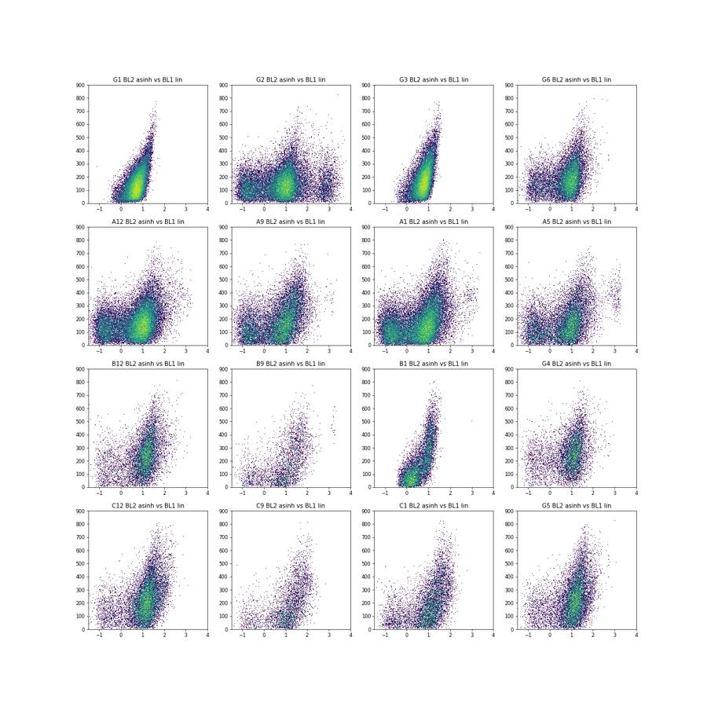
16
tool output
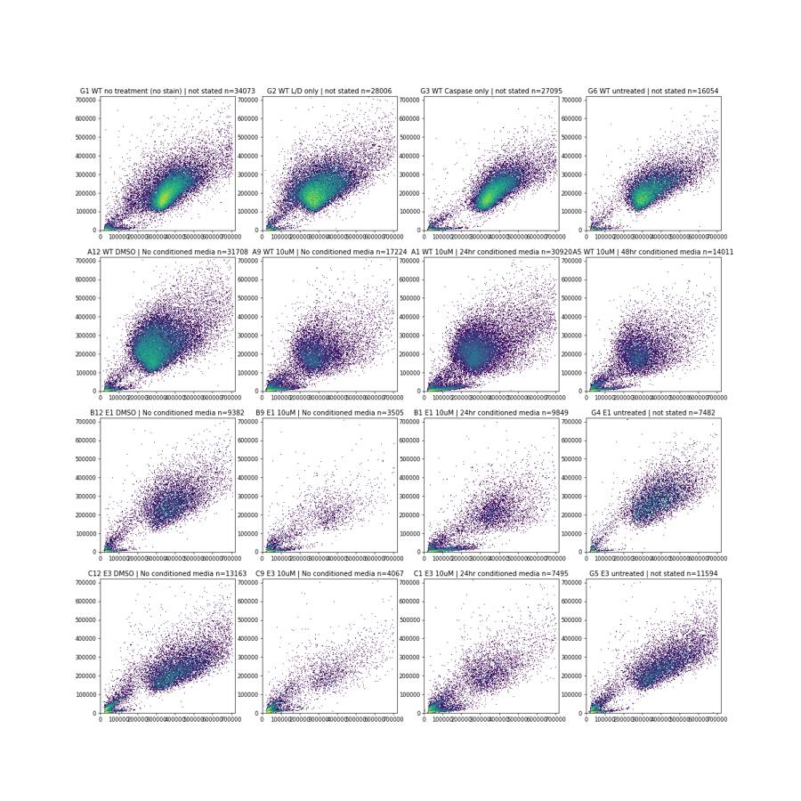
18
thinking
The caspase channel (BL1) looks barely above the unstained control in every well, and well B1 seems to lack the dead-cell stain. I'm checking that systematically now before building gates.
19
tool call · Read
{
"file_path": "/task/work/fsc_bl2.png"
}20
tool output
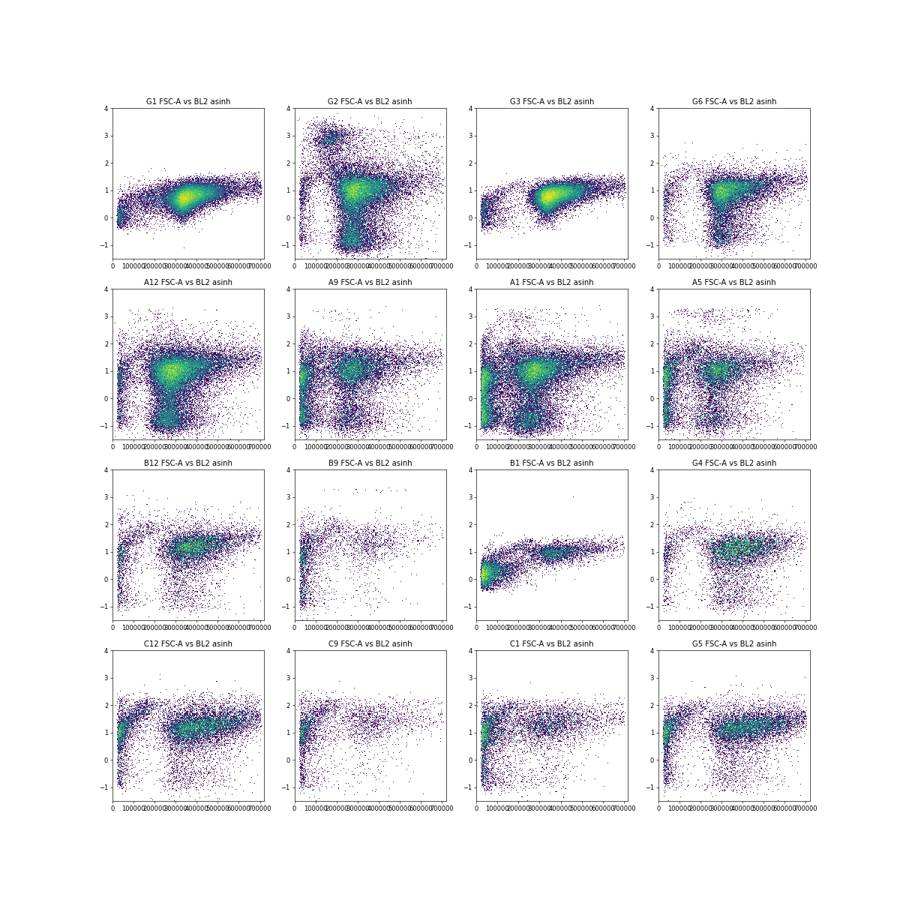
21
tool call · Read
{
"file_path": "/task/work/fsc_bl1.png"
}22
tool output
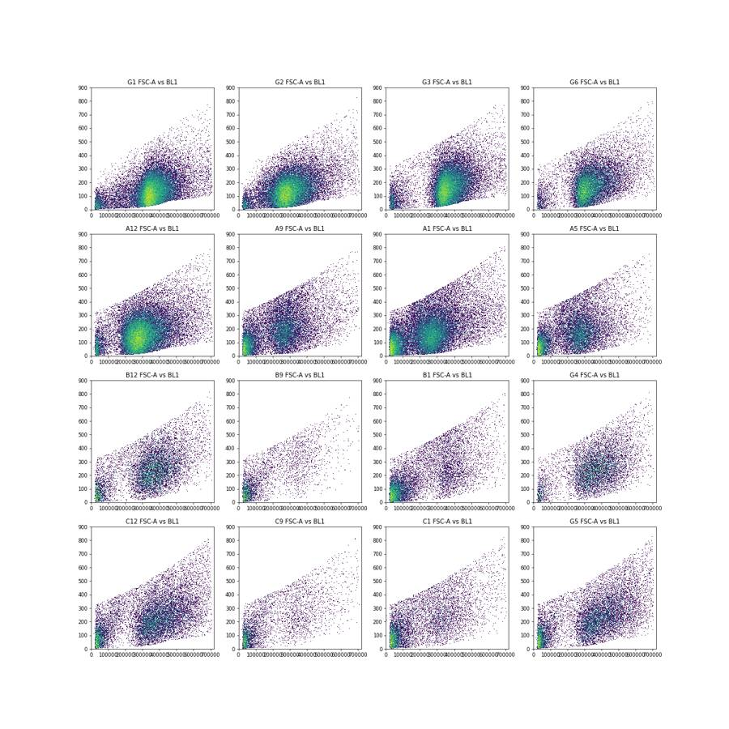
24
tool call · Bash
cd /task; cat > work/e3.py <<'EOF'
import sys; sys.path.insert(0,'/task/work')
from load import *
pd.set_option('display.width',300); pd.set_option('display.max_rows',200)
rows=[]
for _,r in lay.iterrows():
d=load(r.well)
t=d['Time']
h,_=np.histogram(t,bins=np.arange(0,18,1))
intact=(d['FSC-A']>150000)&(d['SSC-A']>60000)
di=d[intact]
rows.append(dict(well=r.well,sample=r['sample'],cm=r.conditioned_media[:4],n=len(d),tmax=round(t.max(),2),
rate_min=h[:16].min(),rate_max=h[:16].max(),rate_cv=round(h[:16].std()/h[:16].mean(),2),
n_intact=intact.sum(),pct_intact=round(100*intact.mean(),1),
bl2neg=round(100*(di['BL2-A']<-100).mean(),1), bl2pos=round(100*(di['BL2-A']>20000).mean(),2), bl2mid=round(100*((di['BL2-A']>3000)&(di['BL2-A']<=20000)).mean(),2),
bl2med=round(di['BL2-A'].median()),
bl1med=round(di['BL1-A'].median()), bl1p99=round(di['BL1-A'].quantile(.99)), bl1max=round(d['BL1-A'].max()),
fscmed=round(di['FSC-A'].median()/1000), sscmed=round(di['SSC-A'].median()/1000),
hist=' '.join(str(x) for x in h)))
df=pd.DataFrame(rows); print(df.to_string()); df.to_csv('work/e3.csv',index=False)
EOF
python3 work/e3.py25
tool output
well sample cm n tmax rate_min rate_max rate_cv n_intact pct_intact bl2neg bl2pos bl2mid bl2med bl1med bl1p99 bl1max fscmed sscmed hist 0 A1 WT 10uM 24hr 30920 16.72 1422 2427 0.15 20657 66.8 19.0 0.92 7.19 601 188 573 805 290 222 1563 1690 1872 1896 1802 1737 1752 1874 2201 2427 2423 2086 1976 1726 1582 1422 891 1 A2 WT 5uM 24hr 31266 16.57 1145 2547 0.18 20016 64.0 20.0 0.94 5.33 506 181 542 795 284 230 1782 1957 1997 1980 1814 1783 1992 2300 2547 2498 2220 1919 1830 1761 1360 1145 381 2 A3 WT 2uM 24hr 38748 16.78 1910 2877 0.12 21788 56.2 19.9 0.63 5.23 511 180 551 804 287 230 1993 2166 2285 2289 2245 2261 2261 2326 2566 2841 2877 2733 2383 2132 2006 1910 1474 3 A4 WT DMSO 24hr 34861 16.73 1484 3012 0.21 32430 93.0 24.1 0.76 3.55 398 163 481 797 290 244 1528 1814 1978 2075 2008 1980 1875 2099 2543 2854 3012 2642 2237 1874 1650 1484 1208 4 A5 WT 10uM 48hr 14011 16.58 657 1138 0.15 9278 66.2 16.6 2.13 8.51 644 200 561 750 292 209 769 828 863 813 766 806 882 1008 1021 1138 1005 930 843 748 657 673 261 5 A6 WT 5uM 48hr 25118 16.73 1162 1973 0.15 16600 66.1 17.3 0.75 6.99 572 180 551 794 283 223 1162 1427 1465 1501 1455 1438 1427 1586 1766 1973 1921 1758 1484 1399 1179 1216 961 6 A7 WT 2uM 48hr 27544 16.50 1382 1968 0.09 16979 61.6 17.3 0.51 6.53 567 182 537 803 284 232 1531 1625 1638 1674 1700 1728 1739 1968 1902 1844 1779 1571 1496 1382 1610 1945 412 7 A8 WT DMSO 48hr 30067 15.85 1379 2630 0.20 27659 92.0 21.0 0.52 4.00 458 164 486 810 293 242 1649 1774 1829 1703 1700 1765 1848 2252 2592 2630 2457 1912 1611 1476 1379 1490 0 8 A9 WT 10uM No c 17224 16.52 760 1308 0.13 10891 63.2 16.3 0.38 10.30 718 219 562 769 294 207 1027 1056 1091 1047 1043 1038 1095 1255 1308 1283 1196 1068 940 907 760 917 193 9 A10 WT 5uM No c 24604 16.64 1127 1877 0.15 16975 69.0 15.1 0.47 8.54 672 194 550 785 291 225 1229 1383 1445 1548 1395 1426 1479 1596 1822 1786 1877 1710 1370 1305 1207 1127 899 10 A11 WT 2uM No c 38346 16.33 1788 3336 0.17 24574 64.1 16.5 0.42 7.27 624 188 551 810 293 229 1998 2119 2231 3336 2140 2286 2163 2583 2766 2801 2861 2463 2192 2004 1897 1788 718 11 A12 WT DMSO No c 31708 16.61 1478 2547 0.15 29307 92.4 16.9 0.57 6.60 579 167 498 787 297 238 1786 1945 1997 2027 1870 1898 1907 2547 2502 2383 2280 1880 1651 1530 1478 1913 114 12 B1 E1 10uM 24hr 9849 16.79 488 690 0.09 4017 40.8 0.0 0.02 0.10 768 290 657 803 375 216 541 529 568 594 596 568 610 623 620 652 690 676 559 545 488 533 457 13 B2 E1 5uM 24hr 10963 16.73 546 783 0.10 4678 42.7 5.4 0.19 12.68 1040 267 620 804 350 232 661 667 617 636 635 688 695 758 772 783 762 695 546 612 600 663 173 14 B3 E1 2uM 24hr 14921 16.75 779 1053 0.09 6150 41.2 2.0 0.05 9.04 1063 261 618 802 372 234 837 862 930 930 917 870 927 1053 1040 1024 1044 911 843 779 794 899 261 15 B4 E1 DMSO 24hr 12172 16.57 554 1034 0.17 10111 83.1 4.8 0.11 7.12 970 246 599 801 401 265 621 696 717 741 749 747 736 925 964 1034 897 714 624 603 554 764 86 16 B5 E1 10uM 48hr 5068 16.55 252 370 0.11 2156 42.5 5.3 1.58 22.68 1256 278 607 712 327 211 287 282 306 316 324 314 310 365 370 364 354 332 271 252 286 306 29 17 B6 E1 5uM 48hr 9638 16.83 475 716 0.12 5136 53.3 6.0 0.25 13.38 1029 251 607 781 333 238 484 583 602 590 574 565 647 635 691 709 716 590 532 475 516 589 140 18 B7 E1 2uM 48hr 13360 16.72 686 1010 0.11 6140 46.0 5.7 0.24 12.90 1042 251 595 795 340 246 747 762 850 798 811 838 827 889 993 1010 917 849 734 686 703 796 150 19 B8 E1 DMSO 48hr 11210 16.67 529 917 0.18 8667 77.3 7.4 0.43 14.06 1089 238 587 796 363 266 553 643 668 672 656 695 792 886 897 917 820 667 600 529 535 639 41 20 B9 E1 10uM No c 3505 16.82 178 257 0.11 1349 38.5 4.5 1.63 31.58 1933 317 633 770 346 207 186 211 216 199 206 208 249 252 257 256 232 213 200 201 178 198 43 21 B10 E1 5uM No c 8268 16.54 433 652 0.13 3888 47.0 4.6 0.15 16.98 1242 278 640 766 364 … [14,934 more characters not shown]
27
tool call · Bash
cd /task; cat > work/p2.py <<'EOF'
import sys; sys.path.insert(0,'/task/work')
from load import *
import matplotlib; matplotlib.use('Agg'); import matplotlib.pyplot as plt
wells=['B10','E10','E9','E11','B1','E1','C10','F12']
fig,ax=plt.subplots(4,8,figsize=(40,20))
for j,w in enumerate(wells):
d=load(w)
ax[0,j].hist2d(d['FSC-A'],d['SSC-A'],bins=150,range=[[0,720000],[0,720000]],norm=matplotlib.colors.LogNorm()); ax[0,j].set_title(w+' '+lay[lay.well==w]['sample'].iloc[0])
ax[1,j].hist2d(d['FSC-A'],np.arcsinh(d['BL2-A']/150)/np.log(10),bins=150,range=[[0,720000],[-1.5,4]],norm=matplotlib.colors.LogNorm())
ax[2,j].hist2d(d['Time'],d['FSC-A'],bins=[85,100],range=[[0,17],[0,720000]],norm=matplotlib.colors.LogNorm())
ax[3,j].hist2d(d['Time'],np.arcsinh(d['BL2-A']/150)/np.log(10),bins=[85,100],range=[[0,17],[-1.5,4]],norm=matplotlib.colors.LogNorm())
fig.savefig('work/e10.png',dpi=45)
EOF
python3 work/p2.py28
tool call · Read
{
"file_path": "/task/work/e10.png"
}29
tool output
(Bash completed with no output)
30
tool output
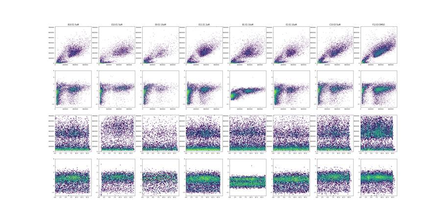
32
agent
Still exploring before gating: checking the odd wells (E10, B1), where the dead-cell threshold sits, and whether the tiny BL1 differences are stain-specific or just cell size/autofluorescence.
33
tool call · Bash
cd /task; cat > work/e4.py <<'EOF'
import sys; sys.path.insert(0,'/task/work')
from load import *
import matplotlib; matplotlib.use('Agg'); import matplotlib.pyplot as plt
pd.set_option('display.width',300)
# E10 vs peers pulse geometry
for w in ['B10','E10','E9','E11','B6','E6','E12','G4']:
d=load(w); i=d[(d['FSC-A']>150000)&(d['SSC-A']>60000)]
print(w, len(i), 'FSC-A',round(i['FSC-A'].median()), 'FSC-H',round(i['FSC-H'].median()),'FSC-W',round(i['FSC-W'].median()),'SSC-A',round(i['SSC-A'].median()),'SSC-H',round(i['SSC-H'].median()),'SSC-W',round(i['SSC-W'].median()), 'BL2',round(i['BL2-A'].median()),'BL1-H',round(i['BL1-H'].median()))
# saturation
for w in ['A1','B12','C12','G1','E10']:
d=load(w)
print(w,'FSC-A>=690k %',round(100*(d['FSC-A']>=690000).mean(),2),'>=700k',round(100*(d['FSC-A']>=700000).mean(),2),'SSC-A sat %',round(100*(d['SSC-A']>=1048575).mean(),3), 'FSC-A hist top', np.histogram(d['FSC-A'],bins=np.arange(600000,730001,10000))[0])
# BL2 histograms
fig,ax=plt.subplots(3,1,figsize=(14,14))
bins=np.linspace(-1.5,4,221)
f=lambda x: np.arcsinh(x/150)/np.log(10)
for w,c in [('G1','k'),('G2','r'),('G3','g'),('G6','b'),('A12','c'),('A9','m')]:
d=load(w); i=d[(d['FSC-A']>150000)&(d['SSC-A']>60000)]
ax[0].hist(f(i['BL2-A']),bins=bins,histtype='step',color=c,label=w,density=True)
for w,c in [('B12','k'),('B9','r'),('E9','g'),('C12','b'),('C9','c'),('C5','m'),('G4','y')]:
d=load(w); i=d[(d['FSC-A']>150000)&(d['SSC-A']>60000)]
ax[1].hist(f(i['BL2-A']),bins=bins,histtype='step',color=c,label=w,density=True)
allv=[]
for w in lay.well:
d=load(w); i=d[(d['FSC-A']>150000)&(d['SSC-A']>60000)]; allv.append(i['BL2-A'].values)
allv=np.concatenate(allv)
ax[2].hist(f(allv),bins=bins,histtype='step',color='k',log=True)
for a in ax[:2]: a.set_yscale('log'); a.legend()
for v in [3000,5000,10000,20000]:
for a in ax: a.axvline(f(v),ls=':',color='gray')
fig.savefig('work/bl2hist.png',dpi=60)
EOF
python3 work/e4.py34
tool call · Read
{
"file_path": "/task/work/bl2hist.png"
}35
tool output
B10 3888 FSC-A 363966 FSC-H 188964 FSC-W 141 SSC-A 223302 SSC-H 130118 SSC-W 131 BL2 1242 BL1-H 182 E10 2350 FSC-A 455986 FSC-H 242778 FSC-W 152 SSC-A 235427 SSC-H 137682 SSC-W 132 BL2 1892 BL1-H 192 E9 1132 FSC-A 339516 FSC-H 178890 FSC-W 141 SSC-A 191517 SSC-H 117152 SSC-W 127 BL2 1724 BL1-H 195 E11 4410 FSC-A 366387 FSC-H 196332 FSC-W 142 SSC-A 231506 SSC-H 134812 SSC-W 130 BL2 1113 BL1-H 185 B6 5136 FSC-A 332977 FSC-H 171645 FSC-W 136 SSC-A 238086 SSC-H 139754 SSC-W 130 BL2 1029 BL1-H 173 E6 3176 FSC-A 330397 FSC-H 169350 FSC-W 132 SSC-A 247870 SSC-H 143658 SSC-W 131 BL2 1139 BL1-H 181 E12 9026 FSC-A 390380 FSC-H 207990 FSC-W 143 SSC-A 258861 SSC-H 146492 SSC-W 132 BL2 1012 BL1-H 178 G4 6717 FSC-A 382274 FSC-H 192643 FSC-W 134 SSC-A 285411 SSC-H 157825 SSC-W 135 BL2 828 BL1-H 172 A1 FSC-A>=690k % 0.18 >=700k 0.06 SSC-A sat % 0.0 FSC-A hist top [80 69 59 58 53 51 50 53 37 37 18 0 0] B12 FSC-A>=690k % 0.37 >=700k 0.09 SSC-A sat % 0.011 FSC-A hist top [39 39 46 36 27 32 23 25 15 27 8 0 0] C12 FSC-A>=690k % 0.48 >=700k 0.14 SSC-A sat % 0.023 FSC-A hist top [103 129 84 92 82 71 64 55 65 44 19 0 0] G1 FSC-A>=690k % 0.28 >=700k 0.12 SSC-A sat % 0.009 FSC-A hist top [75 58 52 56 62 57 49 60 77 55 39 1 0] E10 FSC-A>=690k % 0.33 >=700k 0.05 SSC-A sat % 0.073 FSC-A hist top [44 30 26 37 16 25 14 17 13 15 3 0 0]
36
tool output
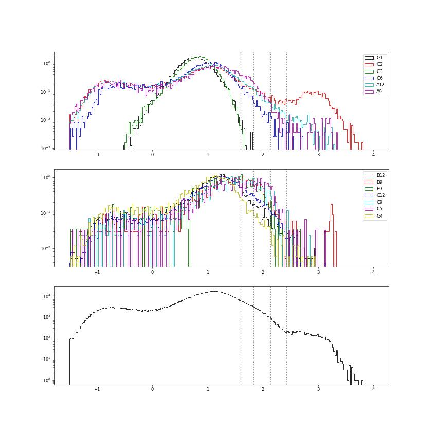
38
tool call · Read
{
"file_path": "/task/work/scatter_log.png"
}39
tool output
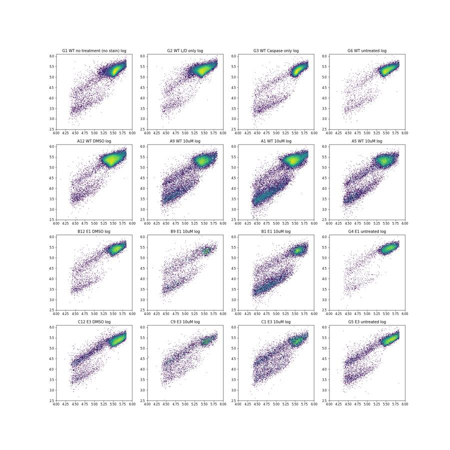
40
tool call · Read
{
"file_path": "/task/work/singlet.png"
}41
tool output
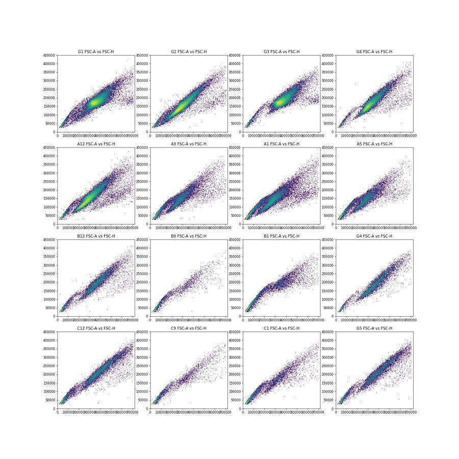
43
tool call · Bash
cd /task; cat > work/e5.py <<'EOF'
import sys; sys.path.insert(0,'/task/work')
from load import *
import matplotlib; matplotlib.use('Agg'); import matplotlib.pyplot as plt
D={w:load(w) for w in lay.well}
import pickle; pickle.dump(D,open('/task/work/D.pkl','wb'))
fig,ax=plt.subplots(2,3,figsize=(21,12))
bins=np.linspace(0.15,0.8,131)
for grp,a in zip([['G1','G3','G6','A12','D12'],['A9','D9','A5','A1'],['B12','E12','G4','B9','E9'],['C12','F12','G5','C9','F9']],ax.ravel()):
for w in grp:
d=D[w]; i=d[(d['FSC-A']>170000)&(d['SSC-A']>70000)]
a.hist(i['FSC-H']/i['FSC-A'],bins=bins,histtype='step',label=w,density=True)
a.set_yscale('log'); a.legend()
# ratio vs FSC-A pooled
al=pd.concat([D[w] for w in lay.well]); i=al[(al['FSC-A']>170000)&(al['SSC-A']>70000)]
ax[1,1].hist2d(i['FSC-A'],i['FSC-H']/i['FSC-A'],bins=200,range=[[150000,720000],[0.15,0.8]],norm=matplotlib.colors.LogNorm())
ax[1,2].hist2d(i['FSC-A'],i['FSC-H'],bins=200,range=[[150000,720000],[0,450000]],norm=matplotlib.colors.LogNorm())
fig.savefig('work/ratio.png',dpi=55)
EOF
python3 work/e5.py44
tool call · Read
{
"file_path": "/task/work/ratio.png"
}45
tool output
(Bash completed with no output)
46
tool output
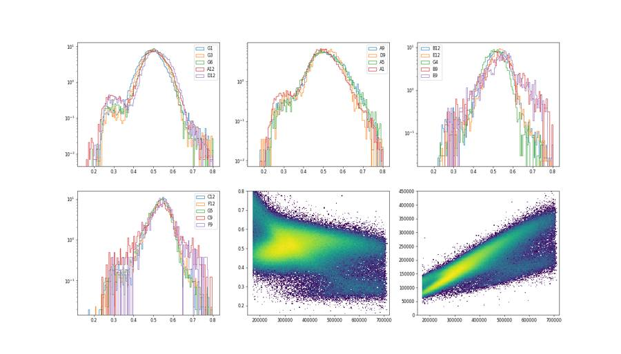
48
tool call · Bash
cd /task; cat > work/e6.py <<'EOF'
import pickle, numpy as np, pandas as pd
from matplotlib.path import Path
D=pickle.load(open('/task/work/D.pkl','rb'))
lay=pd.read_csv('/task/inputs/plate_layout.csv').set_index('well')
cellpoly=Path([(160e3,70e3),(160e3,330e3),(380e3,720e3),(730e3,1.0e6),(730e3,150e3),(400e3,70e3)])
sing=Path([(100e3,37e3),(100e3,82e3),(730e3,535.6e3),(730e3,270.1e3)])
def gate(d):
c=cellpoly.contains_points(d[['FSC-A','SSC-A']].values)
s=c&sing.contains_points(d[['FSC-A','FSC-H']].values)
l=s&(d['BL2-A']<15000).values
return c,s,l
pd.set_option('display.width',300); pd.set_option('display.max_rows',200)
G={}
for w in ['G1','G2','G3','G6','G4','G5']:
d=D[w]; c,s,l=gate(d); x=d[l]; G[w]=x
print(w, len(d), c.sum(), s.sum(), l.sum(), 'BL1-A q', x['BL1-A'].quantile([.5,.9,.95,.99,.995,.999]).round(0).values, 'BL1-H q', x['BL1-H'].quantile([.5,.9,.95,.99,.995,.999]).round(0).values, 'corr A~FSC', round(np.corrcoef(x['BL1-A'],x['FSC-A'])[0,1],2),'corr H~FSC', round(np.corrcoef(x['BL1-H'],x['FSC-A'])[0,1],2), 'corr A~FSCW', round(np.corrcoef(x['BL1-A'],x['FSC-W'])[0,1],2))
# size-binned medians
bins=np.arange(200e3,701e3,50e3)
rows=[]
for w in ['G1','G2','G3','G6','A12','D12','A9','D9','G4','B12','E12','B9','E9','G5','C12','F12','C9','F9']:
d=D[w]; c,s,l=gate(d); x=d[l]
r={'well':w,'sample':lay.loc[w,'sample']}
for lo in bins[:-1]:
m=(x['FSC-A']>=lo)&(x['FSC-A']<lo+50e3)
r[f'{int(lo/1e3)}']=round(x.loc[m,'BL1-A'].median()) if m.sum()>30 else np.nan
rows.append(r)
print(pd.DataFrame(rows).to_string())
rows=[]
for w in ['G1','G2','G3','G6','A12','D12','A9','D9','G4','B12','E12','B9','E9','G5','C12','F12','C9','F9']:
d=D[w]; c,s,l=gate(d); x=d[l]
r={'well':w,'sample':lay.loc[w,'sample']}
for lo in bins[:-1]:
m=(x['FSC-A']>=lo)&(x['FSC-A']<lo+50e3)
r[f'{int(lo/1e3)}']=round(x.loc[m,'BL2-A'].median()) if m.sum()>30 else np.nan
rows.append(r)
print('BL2'); print(pd.DataFrame(rows).to_string())
EOF
python3 work/e6.py49
tool output
G1 34073 31667 30933 30933 BL1-A q [136. 265. 314. 438. 491. 601.] BL1-H q [111. 174. 201. 279. 316. 386.] corr A~FSC 0.36 corr H~FSC 0.33 corr A~FSCW 0.24 G2 28006 25616 24969 23590 BL1-A q [144. 276. 326. 443. 495. 603.] BL1-H q [116. 179. 206. 279. 311. 384.] corr A~FSC 0.42 corr H~FSC 0.4 corr A~FSCW 0.22 G3 27095 25166 24718 24718 BL1-A q [171. 322. 381. 498. 540. 643.] BL1-H q [129. 203. 234. 311. 345. 427.] corr A~FSC 0.35 corr H~FSC 0.33 corr A~FSCW 0.24 G6 16054 15098 14710 14702 BL1-A q [180. 332. 385. 506. 546. 667.] BL1-H q [134. 207. 237. 308. 339. 408.] corr A~FSC 0.39 corr H~FSC 0.38 corr A~FSCW 0.17 G4 7482 6691 6618 6601 BL1-A q [257. 430. 486. 599. 638. 722.] BL1-H q [172. 263. 299. 387. 419. 509.] corr A~FSC 0.38 corr H~FSC 0.36 corr A~FSCW 0.18 G5 11594 8612 8469 8431 BL1-A q [251. 451. 522. 644. 688. 767.] BL1-H q [170. 281. 326. 407. 442. 525.] corr A~FSC 0.46 corr H~FSC 0.39 corr A~FSCW 0.25 well sample 200 250 300 350 400 450 500 550 600 650 0 G1 WT no treatment (no stain) 112 110 116 136 159 179 202 222 268.0 312.0 1 G2 WT L/D only 116 124 145 169 184 215 235 270 314.0 378.0 2 G3 WT Caspase only 210 150 143 166 196 219 249 273 316.0 353.0 3 G6 WT untreated 166 145 163 195 219 236 258 291 354.0 328.0 4 A12 WT DMSO 142 142 164 180 203 222 246 292 294.0 346.0 5 D12 WT DMSO 151 152 174 197 213 240 254 296 327.0 364.0 6 A9 WT 10uM 189 193 218 243 241 278 278 313 335.0 368.0 7 D9 WT 10uM 175 170 202 218 252 273 302 344 370.0 NaN 8 G4 E1 untreated 224 209 226 250 270 286 318 365 381.0 445.0 9 B12 E1 DMSO 236 201 217 242 263 283 316 372 440.0 457.0 10 E12 E1 DMSO 235 206 223 248 269 295 311 355 410.0 476.0 11 B9 E1 10uM 328 293 293 314 346 374 386 468 NaN NaN 12 E9 E1 10uM 312 271 262 280 277 341 382 416 NaN NaN 13 G5 E3 untreated 228 178 190 221 256 281 305 346 375.0 432.0 14 C12 E3 DMSO 243 171 190 213 239 261 288 318 348.0 412.0 15 F12 E3 DMSO 236 188 203 222 248 269 305 347 374.0 422.0 16 C9 E3 10uM 314 254 268 266 306 352 354 367 402.0 NaN 17 F9 E3 10uM 256 238 241 270 326 300 365 398 507.0 NaN BL2 well sample 200 250 300 350 400 450 500 550 600 650 0 G1 WT no treatment (no stain) 357 324 340 423 523 607 669 821 952.0 1211.0 1 G2 WT L/D only 413 385 514 626 674 806 956 1184 1332.0 1463.0 2 G3 WT Caspase only 502 366 384 472 581 656 774 935 956.0 1260.0 3 G6 WT untreated 499 411 493 646 748 851 1086 1217 1436.0 1597.0 4 A12 WT DMSO 353 410 562 692 860 999 1267 1511 1527.0 1922.0 5 D12 WT DMSO 471 493 667 803 916 1088 1351 1652 1732.0 2798.0 6 A9 WT 10uM 474 540 691 798 966 1064 1238 1456 1552.0 1628.0 7 D9 WT 10uM 522 570 696 953 1100 1338 1478 1888 2000.0 NaN 8 G4 E1 untreated 907 530 614 732 871 946 1026 1231 1412.0 1546.0 9 B12 E1 DMSO 842 733 844 991 1109 1276 1439 1822 2203.0 2427.0 10 E12 E1 DMSO 1007 660 770 896 1040 1160 1339 1537 1968.0 2430.0 11 B9 E1 10uM 3700 1451 1321 1277 1747 1528 1526 1913 NaN NaN 12 E9 E1 10uM 4214 1315 1130 1238 1293 1595 1675 1498 NaN NaN 13 G5 E3 untreated 1581 771 810 925 1074 1214 1385 1595 1707.0 2358.0 14 C12 E3 DMSO 1504 840 847 1046 1202 1290 1474 1641 1954.0 2476.0 15 F12 E3 DMSO 1497 802 849 1041 1220 1308 1507 1666 2066.0 2274.0 16 C9 E3 10uM 3497 1769 1732 1655 2040 1970 1957 2507 2408.0 NaN 17 F9 E3 10uM 1510 1035 1060 1084 1655 1524 1882 1852 1992.0 NaN
51
tool call · Bash
cd /task; cat > work/gates.py <<'EOF'
import flowkit as fk, pandas as pd, numpy as np
D=fk.Dimension
def build():
gs=fk.GatingStrategy()
u='uncompensated'
# 1 intact cells: FSC-A vs SSC-A polygon (linear), excludes low-scatter debris and SSC-saturated events
gs.add_gate(fk.gates.PolygonGate('cells',[D('FSC-A',u),D('SSC-A',u)],
[(160e3,70e3),(160e3,330e3),(380e3,720e3),(730e3,1.0e6),(730e3,150e3),(400e3,70e3)]),gate_path=('root',))
# 2 singlets: FSC-H/FSC-A between 0.37 and ~0.73
gs.add_gate(fk.gates.PolygonGate('singlets',[D('FSC-A',u),D('FSC-H',u)],
[(100e3,37e3),(100e3,82e3),(730e3,535.6e3),(730e3,270.1e3)]),gate_path=('root','cells'))
# 3 live: SYTOX AADvanced (BL2-A) negative/dim
gs.add_gate(fk.gates.RectangleGate('live',[D('BL2-A',u,range_min=None,range_max=15000)]),gate_path=('root','cells','singlets'))
# 3b dead: SYTOX bright
gs.add_gate(fk.gates.RectangleGate('dead',[D('BL2-A',u,range_min=15000,range_max=None)]),gate_path=('root','cells','singlets'))
# 4 caspase-3/7 positive (CellEvent green, BL1-A) above FMO (L/D-only) 99.5th percentile
gs.add_gate(fk.gates.RectangleGate('caspase_pos',[D('BL1-A',u,range_min=500,range_max=None)]),gate_path=('root','cells','singlets','live'))
return gs
if __name__=='__main__':
gs=build()
with open('/task/outputs/gates.xml','wb') as f: fk.export_gatingml(gs,f)
g2=fk.parse_gating_xml('/task/outputs/gates.xml')
print(g2.get_gate_ids())
lay=pd.read_csv('/task/inputs/plate_layout.csv')
parent={'cells':'all_events','singlets':'cells','live':'singlets','dead':'singlets','caspase_pos':'live'}
role={'cells':'cells','singlets':'singlets','live':'live','dead':'other','caspase_pos':'marker_positive'}
rows=[]
for _,r in lay.iterrows():
s=fk.Sample('/task/inputs/raw/'+r.file)
res=g2.gate_sample(s)
rep=res.report.set_index('gate_name')
n=s.event_count
cnt={'all_events':n}
for g in parent: cnt[g]=int(rep.loc[g,'count'])
rows.append(dict(file=r.file,well=r.well,population='all_events',role='other',parent='none',count=n,pct_of_parent=''))
for g in ['cells','singlets','live','dead','caspase_pos']:
p=cnt[parent[g]]
rows.append(dict(file=r.file,well=r.well,population=g,role=role[g],parent=parent[g],count=cnt[g],pct_of_parent=(100*cnt[g]/p if p>0 else '')))
df=pd.DataFrame(rows)
df.to_csv('/task/outputs/counts.csv',index=False)
print(df.head(12)); print(len(df))
EOF
python3 work/gates.py && cat outputs/gates.xml | head -8052
tool output
[('cells', ('root',)), ('singlets', ('root', 'cells')), ('live', ('root', 'cells', 'singlets')), ('caspase_pos', ('root', 'cells', 'singlets', 'live')), ('dead', ('root', 'cells', 'singlets'))]
file well ... count pct_of_parent
0 Caspase-assay-2-mlk(1)_caspase_Group_A1.fcs A1 ... 30920
1 Caspase-assay-2-mlk(1)_caspase_Group_A1.fcs A1 ... 20368 65.873221
2 Caspase-assay-2-mlk(1)_caspase_Group_A1.fcs A1 ... 19103 93.789277
3 Caspase-assay-2-mlk(1)_caspase_Group_A1.fcs A1 ... 18911 98.994922
4 Caspase-assay-2-mlk(1)_caspase_Group_A1.fcs A1 ... 192 1.005078
5 Caspase-assay-2-mlk(1)_caspase_Group_A1.fcs A1 ... 323 1.708001
6 Caspase-assay-2-mlk(1)_caspase_Group_A2.fcs A2 ... 31266
7 Caspase-assay-2-mlk(1)_caspase_Group_A2.fcs A2 ... 19583 62.633532
8 Caspase-assay-2-mlk(1)_caspase_Group_A2.fcs A2 ... 18902 96.522494
9 Caspase-assay-2-mlk(1)_caspase_Group_A2.fcs A2 ... 18711 98.989525
10 Caspase-assay-2-mlk(1)_caspase_Group_A2.fcs A2 ... 191 1.010475
11 Caspase-assay-2-mlk(1)_caspase_Group_A2.fcs A2 ... 255 1.362835
[12 rows x 7 columns]
468
<?xml version='1.0' encoding='UTF-8'?>
<gating:Gating-ML xmlns:gating="http://www.isac-net.org/std/Gating-ML/v2.0/gating" xmlns:data-type="http://www.isac-net.org/std/Gating-ML/v2.0/datatypes" xmlns:transforms="http://www.isac-net.org/std/Gating-ML/v2.0/transformations">
<gating:PolygonGate gating:id="cells">
<gating:dimension gating:compensation-ref="uncompensated">
<data-type:fcs-dimension data-type:name="FSC-A"/>
</gating:dimension>
<gating:dimension gating:compensation-ref="uncompensated">
<data-type:fcs-dimension data-type:name="SSC-A"/>
</gating:dimension>
<gating:vertex>
<gating:coordinate data-type:value="160000.0"/>
<gating:coordinate data-type:value="70000.0"/>
</gating:vertex>
<gating:vertex>
<gating:coordinate data-type:value="160000.0"/>
<gating:coordinate data-type:value="330000.0"/>
</gating:vertex>
<gating:vertex>
<gating:coordinate data-type:value="380000.0"/>
<gating:coordinate data-type:value="720000.0"/>
</gating:vertex>
<gating:vertex>
<gating:coordinate data-type:value="730000.0"/>
<gating:coordinate data-type:value="1000000.0"/>
</gating:vertex>
<gating:vertex>
<gating:coordinate data-type:value="730000.0"/>
<gating:coordinate data-type:value="150000.0"/>
</gating:vertex>
<gating:vertex>
<gating:coordinate data-type:value="400000.0"/>
<gating:coordinate data-type:value="70000.0"/>
</gating:vertex>
</gating:PolygonGate>
<gating:PolygonGate gating:id="singlets" gating:parent_id="cells">
<gating:dimension gating:compensation-ref="uncompensated">
<data-type:fcs-dimension data-type:name="FSC-A"/>
</gating:dimension>
<gating:dimension gating:compensation-ref="uncompensated">
<data-type:fcs-dimension data-type:name="FSC-H"/>
</gating:dimension>
<gating:vertex>
<gating:coordinate data-type:value="100000.0"/>
<gating:coordinate data-type:value="37000.0"/>
</gating:vertex>
<gating:vertex>
<gating:coordinate data-type:value="100000.0"/>
<gating:coordinate data-type:value="82000.0"/>
</gating:vertex>
<gating:vertex>
<gating:coordinate data-type:value="730000.0"/>
<gating:coordinate data-type:value="535600.0"/>
</gating:vertex>
<gating:vertex>
<gating:coordinate data-type:value="730000.0"/>
<gating:coordinate data-type:value="270100.0"/>
</gating:vertex>
</gating:PolygonGate>
<gating:RectangleGate gating:id="live" gating:parent_id="singlets">
<gating:dimension gating:compensation-ref="uncompensated" gating:max="15000.0">
<data-type:fcs-dimension data-type:name="BL2-A"/>
</gating:dimension>
</gating:RectangleGate>
<gating:RectangleGate gating:id="caspase_pos" gating:parent_id="live">
<gating:dimension gating:compensation-ref="uncompensated" gating:min="500.0">
<data-type:fcs-dimension data-type:name="BL1-A"/>
</gating:dimension>
</gating:RectangleGate>
<gating:RectangleGate gating:id="dead" gating:parent_id="singlets">
<gating:dimension gating:compensation-ref="uncompensated" gating:min="15000.0">
<data-type:fcs-dimension data-type:name="BL2-A"/>
</gating:dimension>
</gating:RectangleGate>
</gating:Gating-ML>54
agent
Gates and counts are saved. Now checking the gates against the data and tabulating the per-condition results.
55
tool call · Bash
cd /task; cat > work/tab.py <<'EOF'
import pandas as pd, numpy as np, pickle
from matplotlib.path import Path
pd.set_option('display.width',300); pd.set_option('display.max_rows',200)
c=pd.read_csv('/task/outputs/counts.csv')
lay=pd.read_csv('/task/inputs/plate_layout.csv')
w=c.pivot(index='well',columns='population',values='count')
w=lay.set_index('well').join(w)
w['pct_cells']=100*w.cells/w.all_events
w['pct_sing']=100*w.singlets/w.cells
w['pct_dead']=100*w.dead/w.singlets
w['pct_casp']=100*w.caspase_pos/w.live
# median BL1 in live singlets (pandas replicate of gates)
D=pickle.load(open('/task/work/D.pkl','rb'))
cellpoly=Path([(160e3,70e3),(160e3,330e3),(380e3,720e3),(730e3,1.0e6),(730e3,150e3),(400e3,70e3)])
sing=Path([(100e3,37e3),(100e3,82e3),(730e3,535.6e3),(730e3,270.1e3)])
for well,d in D.items():
m=cellpoly.contains_points(d[['FSC-A','SSC-A']].values)&sing.contains_points(d[['FSC-A','FSC-H']].values)&(d['BL2-A']<15000).values
x=d[m]
w.loc[well,'live_chk']=m.sum()
w.loc[well,'bl1_med']=x['BL1-A'].median(); w.loc[well,'bl1h_med']=x['BL1-H'].median()
w.loc[well,'fsc_med']=x['FSC-A'].median()/1e3
w.loc[well,'bl2_med']=x['BL2-A'].median()
mm=m&(d['FSC-A']>=300e3).values&(d['FSC-A']<450e3).values
w.loc[well,'bl1_med_sizematched']=d.loc[mm,'BL1-A'].median()
w.loc[well,'casp_sizematched']=100*(d.loc[mm,'BL1-A']>=500).mean()
w=w.loc[lay.well]
w.to_csv('/task/work/wells.csv')
print(w.drop(columns=['file','sample']).round(2).to_string())
EOF
python3 work/tab.py56
tool output
cell_line camptothecin conditioned_media all_events caspase_pos cells dead live singlets pct_cells pct_sing pct_dead pct_casp live_chk bl1_med bl1h_med fsc_med bl2_med bl1_med_sizematched casp_sizematched well A1 WT 10uM 24hr conditioned media 30920 323 20368 192 18911 19103 65.87 93.79 1.01 1.71 18911.0 181.0 134.0 286.18 542.0 201.0 1.92 A2 WT 5uM 24hr conditioned media 31266 255 19583 191 18711 18902 62.63 96.52 1.01 1.36 18711.0 176.0 134.0 284.12 473.0 197.0 1.80 A3 WT 2uM 24hr conditioned media 38748 271 21300 154 20383 20537 54.97 96.42 0.75 1.33 20383.0 174.0 133.0 286.09 476.0 196.0 1.55 A4 WT DMSO 24hr conditioned media 34861 186 32043 252 30834 31086 91.92 97.01 0.81 0.60 30834.0 159.0 125.0 289.02 373.0 173.0 0.40 A5 WT 10uM 48hr conditioned media 14011 148 9140 170 8600 8770 65.23 95.95 1.94 1.72 8600.0 193.0 142.0 291.19 587.0 203.0 2.24 A6 WT 5uM 48hr conditioned media 25118 214 16300 134 15595 15729 64.89 96.50 0.85 1.37 15595.0 175.0 133.0 282.71 535.0 199.0 1.53 A7 WT 2uM 48hr conditioned media 27544 188 16602 92 15930 16022 60.27 96.51 0.57 1.18 15930.0 176.0 133.0 284.06 526.0 202.0 1.59 A8 WT DMSO 48hr conditioned media 30067 147 27381 149 26412 26561 91.07 97.01 0.56 0.56 26412.0 160.0 127.0 291.99 429.0 175.0 0.43 A9 WT 10uM No conditioned media 17224 218 10727 44 10233 10277 62.28 95.80 0.43 2.13 10233.0 214.0 153.0 292.49 670.0 229.0 2.82 A10 WT 5uM No conditioned media 24604 240 16696 103 15860 15963 67.86 95.61 0.65 1.51 15860.0 189.0 139.0 288.76 626.0 205.0 2.04 A11 WT 2uM No conditioned media 38346 317 24199 116 23066 23182 63.11 95.80 0.50 1.37 23066.0 182.0 136.0 290.80 583.5 202.0 1.53 A12 WT DMSO No conditioned media 31708 186 29133 190 27632 27822 91.88 95.50 0.68 0.67 27632.0 162.0 126.0 294.17 538.0 176.0 0.55 B1 E1 10uM 24hr conditioned media 9849 291 3948 1 3752 3753 40.09 95.06 0.03 7.76 3752.0 287.0 201.0 374.29 757.0 266.0 5.13 B2 E1 5uM 24hr conditioned media 10963 207 4627 14 4500 4514 42.21 97.56 0.31 4.60 4500.0 264.0 181.0 349.50 1005.0 251.0 2.74 B3 E1 2uM 24hr conditioned media 14921 311 6082 5 5940 5945 40.76 97.75 0.08 5.24 5940.0 260.0 177.0 372.37 1037.5 241.0 2.83 B4 E1 DMSO 24hr conditioned media 12172 346 10067 17 9857 9874 82.71 98.08 0.17 3.51 9857.0 244.0 168.0 400.77 953.0 226.0 1.26 B5 E1 10uM 48hr conditioned media 5068 90 2095 22 1998 2020 41.34 96.42 1.09 4.50 1998.0 276.0 193.0 328.66 1178.0 265.0 4.82 B6 E1 5uM 48hr conditioned media 9638 139 5065 18 4899 4917 52.55 97.08 0.37 2.84 4899.0 246.0 172.0 332.66 997.0 233.0 1.23 B7 E1 2uM 48hr conditioned media 13360 194 6050 18 5896 5914 45.28 97.75 0.30 3.29 5896.0 247.0 169.0 340.07 1004.0 236.0 2.00 B8 E1 DMSO 48hr conditioned media 11210 198 8592 61 8363 8424 76.65 98.04 0.72 2.37 8363.0 236.0 164.0 362.75 1048.0 225.0 0.87 B9 E1 10uM No conditioned media 3505 85 1305 19 1244 1263 37.23 96.78 1.50 6.83 1244.0 317.0 218.0 347.47 1757.0 314.0 4.21 B10 E1 5uM No conditioned media 8268 215 3825 12 3714 3726 46.26 97.41 0.32 5.79 3714.0 275.0 181.0 363.31 1183.5 261.0 3.83 B11 E1 2uM No conditioned media 10609 227 4860 12 4741 4753 45.81 97.80 0.25 4.79 4741.0 261.0 180.0 366.26 1121.0 249.0 2.36 B12 E1 DMSO No conditioned media 9382 328 7727 46 7484 7530 82.36 97 … [12,799 more characters not shown]
58
tool call · Bash
cd /task; cat > work/tqc.py <<'EOF'
import pickle, numpy as np, pandas as pd
D=pickle.load(open('/task/work/D.pkl','rb'))
out=[]
for w,d in D.items():
t=d['Time'].values; tmax=t.max()
h,_=np.histogram(t,bins=np.arange(0,np.floor(tmax*2)/2+0.01,0.5))
med=np.median(h)
gaps=np.diff(np.sort(t));
# scatter drift: median FSC-A of cells first third vs last third
c=d[(d['FSC-A']>160e3)&(d['SSC-A']>70e3)]
f1=c.loc[c.Time<tmax/3,'FSC-A'].median(); f3=c.loc[c.Time>2*tmax/3,'FSC-A'].median()
b1=c.loc[c.Time<tmax/3,'BL1-A'].median(); b3=c.loc[c.Time>2*tmax/3,'BL1-A'].median()
out.append(dict(well=w,n=len(d),tmin=round(t.min(),2),tmax=round(tmax,2),med_rate=med,min_ratio=round(h.min()/med,2),max_ratio=round(h.max()/med,2),argmin=h.argmin()*0.5,argmax=h.argmax()*0.5,maxgap=round(gaps.max(),3),fsc_drift=round(f3/f1,3),bl1_drift=round(b3/b1,3)))
o=pd.DataFrame(out); pd.set_option('display.width',250); pd.set_option('display.max_rows',100)
print(o.sort_values('min_ratio').head(15).to_string()); print(o.sort_values('max_ratio').tail(10).to_string()); print(o.sort_values('maxgap').tail(8).to_string())
print(o[['fsc_drift','bl1_drift']].describe())
print(o.sort_values('fsc_drift').iloc[[0,1,2,-3,-2,-1]].to_string())
o.to_csv('/task/work/tqc.csv',index=False)
EOF
python3 work/tqc.py59
tool output
well n tmin tmax med_rate min_ratio max_ratio argmin argmax maxgap fsc_drift bl1_drift
57 E10 5492 0.54 16.51 170.0 0.00 1.39 0.0 8.5 0.550 1.035 1.021
35 C12 13163 0.02 16.73 403.0 0.02 1.43 16.0 8.5 0.380 1.000 1.000
77 G6 16054 0.01 16.44 498.5 0.03 1.48 15.5 8.5 0.270 1.014 1.000
36 D1 22778 0.01 16.58 712.0 0.05 1.45 16.0 8.5 0.154 1.009 1.018
71 F12 11679 0.02 16.12 361.0 0.05 1.68 15.5 3.5 0.091 1.021 0.953
31 C8 8215 0.02 16.04 250.5 0.07 1.47 15.5 8.5 0.102 1.006 1.044
67 F8 10605 0.02 16.65 316.0 0.08 1.50 16.0 9.0 0.149 0.996 1.008
25 C2 10263 0.02 16.76 317.0 0.10 1.35 16.0 9.5 0.161 0.988 1.004
33 C10 8011 0.02 16.06 254.5 0.10 1.37 15.5 8.0 0.060 0.985 1.041
63 F4 10729 0.01 16.33 324.0 0.10 1.69 15.5 3.5 0.108 1.020 1.012
19 B8 11210 0.01 16.67 336.0 0.10 1.45 16.0 9.0 0.107 1.015 1.009
11 A12 31708 0.01 16.61 956.0 0.12 1.39 16.0 9.0 0.057 1.021 1.012
42 D7 23253 0.02 16.45 738.5 0.14 1.32 15.5 8.5 0.132 1.026 1.015
40 D5 6454 0.02 16.35 199.0 0.14 1.48 15.5 7.0 0.193 1.003 1.019
21 B10 8268 0.01 16.54 250.0 0.15 1.34 16.0 8.5 0.069 1.003 0.979
well n tmin tmax med_rate min_ratio max_ratio argmin argmax maxgap fsc_drift bl1_drift
55 E8 7979 0.02 16.64 235.0 0.34 1.56 16.0 9.5 0.056 1.014 1.004
74 G3 27095 0.01 16.76 778.0 0.76 1.56 14.5 9.5 0.059 1.026 0.994
10 A11 38346 0.01 16.33 1114.0 0.75 1.56 15.0 3.5 0.005 1.019 1.011
75 G4 7482 0.02 15.92 227.0 0.69 1.57 13.5 9.0 0.026 1.007 1.008
62 F3 9940 0.02 15.89 291.0 0.74 1.60 0.0 9.0 0.022 1.033 1.042
65 F6 6320 0.02 16.82 180.0 0.74 1.61 4.0 9.5 0.027 1.008 1.019
76 G5 11594 0.02 16.60 321.0 0.63 1.64 16.0 9.5 0.021 0.986 1.004
26 C3 8563 0.01 16.21 263.0 0.19 1.64 15.5 3.5 0.065 1.012 0.976
71 F12 11679 0.02 16.12 361.0 0.05 1.68 15.5 3.5 0.091 1.021 0.953
63 F4 10729 0.01 16.33 324.0 0.10 1.69 15.5 3.5 0.108 1.020 1.012
well n tmin tmax med_rate min_ratio max_ratio argmin argmax maxgap fsc_drift bl1_drift
42 D7 23253 0.02 16.45 738.5 0.14 1.32 15.5 8.5 0.132 1.026 1.015
67 F8 10605 0.02 16.65 316.0 0.08 1.50 16.0 9.0 0.149 0.996 1.008
36 D1 22778 0.01 16.58 712.0 0.05 1.45 16.0 8.5 0.154 1.009 1.018
25 C2 10263 0.02 16.76 317.0 0.10 1.35 16.0 9.5 0.161 0.988 1.004
40 D5 6454 0.02 16.35 199.0 0.14 1.48 15.5 7.0 0.193 1.003 1.019
77 G6 16054 0.01 16.44 498.5 0.03 1.48 15.5 8.5 0.270 1.014 1.000
35 C12 13163 0.02 16.73 403.0 0.02 1.43 16.0 8.5 0.380 1.000 1.000
57 E10 5492 0.54 16.51 170.0 0.00 1.39 0.0 8.5 0.550 1.035 1.021
fsc_drift bl1_drift
count 78.000000 78.000000
mean 1.010910 1.001154
std 0.014881 0.027953
min 0.971000 0.916000
25% 1.003000 0.988250
50% 1.014000 1.005500
75% 1.021000 1.019000
max 1.041000 1.053000
well n tmin tmax med_rate min_ratio max_ratio argmin argmax maxgap fsc_drift bl1_drift
68 F9 3608 0.02 15.81 115.0 0.78 1.45 0.0 9.0 0.052 0.971 0.936
60 F1 6393 0.02 16.71 186.0 0.77 1.30 15.0 9.5 0.024 0.972 0.974
16 B5 5068 0.02 16.55 154.0 0.16 1.29 16.0 8.5 0.091 0.976 0.984
57 E10 5492 0.54 16.51 170.0 0.00 1.39 0.0 8.5 0.550 1.035 1.021
47 D12 25256 0.01 16.70 744.0 0.78 1.41 15.0 8.0 0.017 1.035 1.029
44 D9 8616 0.02 15.87 263.0 0.76 1.39 15.0 10.0 0.021 1.041 1.02561
agent
Acquisition QC is clean (no clogs or dry wells; only E10 starts late). Moving on to the figure and the written deliverables.
62
tool call · Skill
{
"skill": "dataviz"
}63
tool output
Launching skill: dataviz
64
tool call · Bash
cd /tmp/claude-0/bundled-skills/2.1.322/503402dd5d27a0cc78428ce40937318a/dataviz; sed -n 1,80p references/palette.md; grep -n -i "dot\|strip\|small mult" references/choosing-a-form.md | head -20
65
tool output
# Reference palette
This is the **reference instance** of the data-viz method: every parameter the
method needs, filled in with a validated default palette. The rest of the skill
is system-agnostic - **to target your brand, substitute this file's values** and
re-run the validator. Nothing else changes.
## How to use these values
Everything below is plain hex. In an HTML chart, **define the slots you use as
CSS custom properties in a local `<style>` block** at the top of the file, then
reference them by role throughout - so the light/dark values swap in one place,
and the chart body is written against roles rather than raw hex:
```css
.viz-root {
color-scheme: light;
--surface-1: #fcfcfb; /* chart surface */
--text-primary: #0b0b0b;
--text-secondary: #52514e;
--series-1: #2a78d6; /* categorical slot 1 */
/* ...only the roles this chart uses */
}
@media (prefers-color-scheme: dark) {
:root:where(:not([data-theme="light"])) .viz-root {
color-scheme: dark;
--surface-1: #1a1a19;
--text-primary: #f0efec;
--text-secondary: #c3c2b7;
--series-1: #3987e5;
}
}
:root[data-theme="dark"] .viz-root {
color-scheme: dark;
--surface-1: #1a1a19;
--text-primary: #f0efec;
--text-secondary: #c3c2b7;
--series-1: #3987e5;
}
```
Declare the dark values under both scopes as above - the media query covers
the OS setting; the `data-theme` scope covers the viewer's theme toggle,
which must win both ways (the `:not(...)` guard lets a light stamp beat
OS-dark; `:where()` keeps the media block below the toggle scope).
## Categorical palette
Both modes are selected. The dark column is the same eight hues stepped for the
dark surface, not a separate palette:
| Slot | Hue | Light | Dark |
|------|-----|-------|------|
| 1 | blue | `#2a78d6` | `#3987e5` |
| 2 | orange | `#eb6834` | `#d95926` |
| 3 | aqua | `#1baf7a` | `#199e70` |
| 4 | yellow | `#eda100` | `#c98500` |
| 5 | magenta | `#e87ba4` | `#d55181` |
| 6 | green | `#008300` | `#008300` |
| 7 | violet | `#6250d6` | `#9085e9` |
| 8 | red | `#e34948` | `#e66767` |
This order passes every hard gate in both modes on the default *adjacent*
pairlist (stacks, bars, lines): worst adjacent CVD Delta E 9.1 light / 8.4 dark
(OKLab ×100, >=8 target), worst adjacent normal-vision Delta E 19.6 light / 19.3
dark (>=15 floor). Under `--pairs all` (scatter, bubble, choropleth, small
multiples) the full eight cannot clear the floors - with all 28 pairs in
play no ordering can (the pairlist no longer depends on order), and
re-stepping is off the table by the documented-palette rule - so those
chart forms carry a series cap: **the first three slots validate all-pairs
in both modes** (worst pair CVD Delta E 9.2 light / 9.4 dark, normal-vision 24.0
light / 20.9 dark - clear of the CVD warn band). Past three, fold to "Other" or
facet: the fourth slot puts yellow and orange on screen
together, and that pair fails the all-pairs floors (normal-vision 13.7
light; CVD 4.8 dark). Three light-mode slots (magenta, yellow, aqua)
sit below 3:1 contrast on the light surface: the **relief rule** applies (ship
visible direct labels or the table view). The dark steps were chosen for the
dark band (OKLCH L ~ 0.48-0.67, >= 3:1 on the dark surface) and validated as a
set. (Ordering history: adopted July 2026 for its more harmonious opening -
the same eight hues and steps as its predecessor, re-ordered, zero hex
66:| 4 | adjacent forms (stacks, bars, lines) stay gate-safe, but direct labels become mandatory - yellow and orange now share the screen; all-pairs forms (scatter, bubble, choropleth, small multiples) cap at **three** - fold to "Other" or facet rather than seat a 4th |
67:| 5-6 | soft cap; legend or small multiples |
68:| 7-8 | token ceiling; past it, fold the tail into "Other," facet into small multiples, or use composite encoding (hue × shape) |
Shell cwd was reset to /task67
tool call · Bash
cd /tmp/claude-0/bundled-skills/2.1.322/503402dd5d27a0cc78428ce40937318a/dataviz; node scripts/validate_palette.js "#2a78d6,#eb6834,#1baf7a" --mode light --pairs all 2>&1 | tail -15; node scripts/validate_palette.js "#6250d6,#eda100,#e34948" --mode light 2>&1 | tail -15
68
tool output
/bin/bash: line 1: node: command not found /bin/bash: line 1: node: command not found Shell cwd was reset to /task
70
tool call · Bash
cd /task; cat > work/final.py <<'EOF'
import pandas as pd, numpy as np, json, pickle
w=pd.read_csv('/task/work/wells.csv').set_index('well')
lay=pd.read_csv('/task/inputs/plate_layout.csv')
tq=pd.read_csv('/task/work/tqc.csv').set_index('well')
D=pickle.load(open('/task/work/D.pkl','rb'))
# ---------- flags ----------
flags={}
d=D['B1']; cells_b1=int(w.loc['B1','cells'])
flags['B1']=('other',
"SYTOX AADvanced (BL2) dead-cell stain appears to be missing so the live gate is not valid: BL2-A 99th percentile of all events = 1897 "
"(unstained G1 = 1782; caspase-only G3 = 1735; the other five E1 10uM wells = 6546-16369); 0.0% of scatter-gated cells have BL2-A < -100 "
"(2.0-7.4% in the other 23 SYTOX-stained E1 wells; 0.1% in the no-SYTOX controls G1/G3); only 1 of 3753 singlets (0.03%) falls in the dead gate; "
"FSC-A median of live singlets 374k matches the no-SYTOX pattern (other E1 10uM wells 329-348k). Replicate E1 is used alone for this condition.",
'exclude')
flags['E10']=('other',
"Acquisition start disturbed and forward scatter shifted: first event at 0.54 s (15 events in the first second vs ~300-450/s afterwards); "
"FSC-A median of live singlets = 458k vs 330-389k in the other E1-line wells (FSC-H and FSC-W both raised, SSC unchanged). Because background BL1-A scales with event size, "
"% caspase_pos is inflated (8.03% vs 5.79% in replicate B10; 3.79% vs 3.83% when restricted to FSC-A 300-450k). Kept, but the E1 5uM no-CM mean is biased upward.",
'keep_with_note')
flags['G3']=('bad_control',
"Caspase-only control was made from untreated WT cells and contains no caspase-positive population, so it cannot serve as a positive single-stain/gate-setting control: "
"0.98% of live singlets above the BL1-A>=500 gate vs 0.48% in the L/D-only FMO (G2) and 0.46% unstained (G1); median BL1-A 171 vs 144 (G2) and 136 (G1); "
"maximum BL1-A 769 on a 1048576-channel scale; BL1-W = 0 for all 27095 events. Kept as a background reference only.",
'keep_with_note')
rows=[]
for _,r in lay.iterrows():
it,ev,dec=flags.get(r.well,('none','','keep'))
rows.append(dict(file=r.file,well=r.well,issue_type=it,evidence=ev,decision=dec))
fl=pd.DataFrame(rows); fl.to_csv('/task/outputs/flags.csv',index=False)
excluded=fl[fl.decision=='exclude'].well.tolist()
# ---------- condition summary ----------
cmname={'24hr conditioned media':'CM24h','48hr conditioned media':'CM48h','No conditioned media':'noCM'}
def cond(r):
if r.name=='G1': return 'ctrl_WT_unstained'
if r.name=='G2': return 'ctrl_WT_LD_only_FMO'
if r.name=='G3': return 'ctrl_WT_caspase_only'
if r.name=='G4': return 'ctrl_E1_untreated_stained'
if r.name=='G5': return 'ctrl_E3_untreated_stained'
if r.name=='G6': return 'ctrl_WT_untreated_stained'
return f"{r.cell_line}_{r.camptothecin}_{cmname[r.conditioned_media]}"
w['condition']=w.apply(cond,axis=1)
w['used']=~w.index.isin(excluded)
mdef="100 x count(caspase_pos) / count(live); caspase_pos = BL1-A >= 500 (CellEvent Caspase-3/7 Green detector) within live = SYTOX AADvanced-negative (BL2-A < 15000) singlet cells; percent per well then mean and sd across wells"
cs=[]
order=[]
for c in w.condition:
if c not in order: order.append(c)
for c in order:
x=w[(w.condition==c)&w.used]
if len(x)==0: continue
cs.append(dict(condition=c,wells=';'.join(x.index),n_wells_used=len(x),mean=round(x.pct_casp.mean(),4),sd=(round(x.pct_casp.std(ddof=1),4) if len(x)>1 else ''),metric_definition=mdef,normalisation_applied='none'))
cs=pd.DataFrame(cs); cs.to_csv('/task/outputs/condition_summary.csv',index=False)
pd.set_option('display.width',250); pd.set_option('display.max_rows',100); pd.set_option('display.max_colwidth',30)
print(cs.drop(columns=['metric_definition']).to_string())
# supporting tables
u=w[w.used & ~w.index.str.startswith('G')].copy()
u['cm']=u.conditioned_media.map(cmname)
for col in ['pct_casp','bl1_med','bl1_med_sizematched','casp_sizematched','pct_cells','pct_dead','live','fsc_med']:
print(col); print(u.pivot_table(index=['cell_line','camptothecin'],columns='cm',values=col,aggfunc='mean').round(2).loc[[(l,dd) for l in ['WT','E1','E3'] for dd in ['DMSO','2uM','5uM','10uM']]][['noCM','CM24h','CM48h']].to_string())
# paired across dose x replicate row
w['row']=w.index.str[0]
for line in ['WT','E1','E3']:
for cm in ['24hr conditioned media','48hr conditioned media']:
a=w[(w.cell_line==line)&(w.conditioned_media==cm)&w.used&~w.index.str.startswith('G')].set_index(['row','camptothecin']).pct_casp
b=w[(w.cell_line==line)&(w.conditioned_media=='No conditioned media')&~w.index.str.startswith('G')].set_index(['row','camptothecin']).pct_casp
dd=(a-b).dropna()
print(line,cm,'n pairs',len(dd),'mean diff',round(dd.mean(),2),'n lower',(dd<0).sum(),'ratio',round((a/b).dropna().mean(),2))
w.to_csv('/task/work/wells2.csv')
EOF
python3 work/final.py71
tool output
condition wells n_wells_used mean sd normalisation_applied
0 WT_10uM_CM24h A1;D1 2 1.6914 0.0234 none
1 WT_5uM_CM24h A2;D2 2 1.2343 0.1818 none
2 WT_2uM_CM24h A3;D3 2 1.3149 0.0206 none
3 WT_DMSO_CM24h A4;D4 2 0.7540 0.2132 none
4 WT_10uM_CM48h A5;D5 2 1.6850 0.0508 none
5 WT_5uM_CM48h A6;D6 2 1.3661 0.0087 none
6 WT_2uM_CM48h A7;D7 2 1.1884 0.0116 none
7 WT_DMSO_CM48h A8;D8 2 0.7685 0.2998 none
8 WT_10uM_noCM A9;D9 2 1.9381 0.2718 none
9 WT_5uM_noCM A10;D10 2 1.5332 0.0283 none
10 WT_2uM_noCM A11;D11 2 1.3608 0.0191 none
11 WT_DMSO_noCM A12;D12 2 0.7178 0.0632 none
12 E1_10uM_CM24h E1 1 4.7254 none
13 E1_5uM_CM24h B2;E2 2 4.1078 0.6961 none
14 E1_2uM_CM24h B3;E3 2 4.5086 1.0283 none
15 E1_DMSO_CM24h B4;E4 2 3.9522 0.6251 none
16 E1_10uM_CM48h B5;E5 2 3.5780 1.3103 none
17 E1_5uM_CM48h B6;E6 2 2.7426 0.1339 none
18 E1_2uM_CM48h B7;E7 2 3.1104 0.2545 none
19 E1_DMSO_CM48h B8;E8 2 2.6780 0.4391 none
20 E1_10uM_noCM B9;E9 2 6.3491 0.6841 none
21 E1_5uM_noCM B10;E10 2 6.9078 1.5823 none
22 E1_2uM_noCM B11;E11 2 4.8634 0.1066 none
23 E1_DMSO_noCM B12;E12 2 4.5221 0.1971 none
24 E3_10uM_CM24h C1;F1 2 6.8921 0.3145 none
25 E3_5uM_CM24h C2;F2 2 5.5431 0.0922 none
26 E3_2uM_CM24h C3;F3 2 6.1303 1.1824 none
27 E3_DMSO_CM24h C4;F4 2 5.7035 0.4016 none
28 E3_10uM_CM48h C5;F5 2 6.6961 0.1639 none
29 E3_5uM_CM48h C6;F6 2 6.9298 1.2261 none
30 E3_2uM_CM48h C7;F7 2 7.0266 0.044 none
31 E3_DMSO_CM48h C8;F8 2 6.1173 0.8799 none
32 E3_10uM_noCM C9;F9 2 8.0037 0.7637 none
33 E3_5uM_noCM C10;F10 2 7.1135 0.4232 none
34 E3_2uM_noCM C11;F11 2 7.1294 0.8405 none
35 E3_DMSO_noCM C12;F12 2 5.4663 0.1997 none
36 ctrl_WT_unstained G1 1 0.4558 none
37 ctrl_WT_LD_only_FMO G2 1 0.4790 none
38 ctrl_WT_caspase_only G3 1 0.9790 none
39 ctrl_E1_untreated_stained G4 1 4.2569 none
40 ctrl_E3_untreated_stained G5 1 6.2507 none
41 ctrl_WT_untreated_stained G6 1 1.0815 none
pct_casp
cm noCM CM24h CM48h
cell_line camptothecin
WT DMSO 0.72 0.75 0.77
2uM 1.36 1.31 1.19
5uM 1.53 1.23 1.37
10uM 1.94 1.69 1.69
E1 DMSO 4.52 3.95 2.68
2uM 4.86 4.51 3.11
5uM 6.91 4.11 2.74
10uM 6.35 4.73 3.58
E3 DMSO 5.47 5.70 6.12
2uM 7.13 6.13 7.03
5uM 7.11 5.54 6.93
10uM 8.00 6.89 6.70
bl1_med
cm noCM CM24h CM48h
cell_line camptothecin
WT DMSO 168.00 169.50 168.5
2uM 190.50 184.00 186.5
5uM 197.00 181.50 184.0
10uM 208.00 188.00 197.0
E1 DMSO 257.50 255.00 244.0
2uM 266.50 265.00 253.5
5uM 279.50 263.25 257.5
10uM 304.00 277.00 277.0
E3 DMSO 244.00 247.00 250.5
2uM 269.00 253.50 262.5
5uM 271.00 249.50 265.0
10uM 295.25 270.00 271.0
bl1_med_sizematched
cm noCM CM24h CM48h
cell_line camptothecin
WT DMSO 182.0 183.5 182.50
2uM 208.5 204.0 208.00
5uM 211.0 199.5 207.00
10uM 222.5 204.0 211.50
E1 DMSO 243.0 238.5 231.50
2uM 254.0 250.0 244.50
5uM 262.0 253.0 248.50
10uM 293.0 266.0 263.00
E3 DMSO 218.5 213.5 218.00
2uM 240.5 231.0 236.00
5uM 246.5 229.5 243.50
10uM 272.5 252.5 246.75
casp_sizematched
cm noCM CM24h CM48h
cell_line camptothecin
WT DMSO 0.54 0.49 0.54
2uM 1.27
… [3,490 more characters not shown]73
agent
Flags and the condition summary are written. Now making the figure, then the report and answer file.
74
tool call · Bash
cd /task; cat > work/fig.py <<'EOF'
import pandas as pd, numpy as np, pickle
import matplotlib; matplotlib.use('Agg'); import matplotlib.pyplot as plt
from matplotlib.path import Path
w=pd.read_csv('/task/work/wells2.csv').set_index('well')
D=pickle.load(open('/task/work/D.pkl','rb'))
cellpoly=Path([(160e3,70e3),(160e3,330e3),(380e3,720e3),(730e3,1.0e6),(730e3,150e3),(400e3,70e3)])
sing=Path([(100e3,37e3),(100e3,82e3),(730e3,535.6e3),(730e3,270.1e3)])
def live(d):
m=cellpoly.contains_points(d[['FSC-A','SSC-A']].values)&sing.contains_points(d[['FSC-A','FSC-H']].values)&(d['BL2-A']<15000).values
return d[m]
SURF='#fcfcfb'; INK='#0b0b0b'; INK2='#52514e'; GRID='#e4e3df'
col={'No conditioned media':'#2a78d6','24hr conditioned media':'#eb6834','48hr conditioned media':'#1baf7a'}
lab={'No conditioned media':'No conditioned media','24hr conditioned media':'24 h WT-conditioned media','48hr conditioned media':'48 h WT-conditioned media'}
mk={'No conditioned media':'o','24hr conditioned media':'s','48hr conditioned media':'^'}
doses=['DMSO','2uM','5uM','10uM']; dl=['DMSO','2 µM','5 µM','10 µM']
plt.rcParams.update({'font.family':'DejaVu Sans','font.size':10,'axes.edgecolor':INK2,'axes.labelcolor':INK,'xtick.color':INK2,'ytick.color':INK2,'text.color':INK})
fig=plt.figure(figsize=(13,9.2),facecolor=SURF)
gs=fig.add_gridspec(2,3,height_ratios=[1.25,1],hspace=0.42,wspace=0.08,left=0.07,right=0.98,top=0.87,bottom=0.07)
axs=[fig.add_subplot(gs[0,i]) for i in range(3)]
titles={'WT':'H4 WT','E1':'H4 GRN KO clone E1','E3':'H4 GRN KO clone E3'}
fmo=w.loc['G2','pct_casp']
wtref=w[(w.cell_line=='WT')&(w.conditioned_media=='No conditioned media')&(w.camptothecin=='10uM')].pct_casp.mean()
for ax,line in zip(axs,['WT','E1','E3']):
ax.set_facecolor(SURF)
for i,(cm,off) in enumerate(zip(col,[-0.16,0,0.16])):
x=w[(w.cell_line==line)&(w.conditioned_media==cm)&~w.index.str.startswith('G')]
means=[]
for j,dz in enumerate(doses):
xx=x[x.camptothecin==dz]
used=xx[xx.used]; exc=xx[~xx.used]
ax.scatter([j+off]*len(used),used.pct_casp,s=42,color=col[cm],marker=mk[cm],edgecolor=SURF,linewidth=1,zorder=3)
if len(exc):
ax.scatter([j+off]*len(exc),exc.pct_casp,s=46,facecolor='none',marker=mk[cm],edgecolor=col[cm],linewidth=1.3,zorder=3)
ax.annotate('B1 excluded\n(no dead-cell stain)',(j+off,exc.pct_casp.iloc[0]),xytext=(j+off-1.25,exc.pct_casp.iloc[0]+0.9),fontsize=8,color=INK2,arrowprops=dict(arrowstyle='-',color=INK2,lw=0.7))
means.append(used.pct_casp.mean())
ax.plot(np.arange(4)+off,means,color=col[cm],lw=2,zorder=2,label=lab[cm] if line=='WT' else None)
ax.axhline(fmo,color=INK2,lw=1,ls=(0,(4,3)),zorder=1)
if line!='WT':
ax.axhline(wtref,color=INK2,lw=1,ls=(0,(1,2)),zorder=1)
if line=='E1': ax.text(3.45,wtref+0.12,'WT, 10 µM, no CM (1.9%)',ha='right',va='bottom',fontsize=8,color=INK2)
else:
ax.text(3.45,fmo-0.12,'no-caspase-dye control (0.5%)',ha='right',va='top',fontsize=8,color=INK2)
ax.set_xticks(range(4)); ax.set_xticklabels(dl); ax.set_xlim(-0.5,3.5); ax.set_ylim(0,10)
ax.set_title(titles[line],fontsize=11,loc='left',color=INK)
ax.grid(axis='y',color=GRID,lw=0.8); ax.set_axisbelow(True)
for s in ['top','right']: ax.spines[s].set_visible(False)
ax.set_xlabel('Camptothecin, 4.5 h')
if line!='WT': ax.tick_params(labelleft=False)
axs[0].set_ylabel('BL1-A ≥ 500 events, % of live singlets\n("caspase-3/7 positive" gate)')
axs[0].legend(loc='upper left',frameon=False,fontsize=9,title='Points = wells, line = mean',title_fontsize=8.5)
fig.suptitle('Conditioned media did not bring GRN KO cells to WT level, and the caspase channel never resolved a positive population',x=0.07,ha='left',fontsize=13,fontweight='bold',y=0.965)
fig.text(0.07,0.918,'Caspase assay plate 16-Dec-2022 (H4, CellEvent Caspase-3/7 Green in BL1, SYTOX AADvanced in BL2). Top: gate frequency per well. Bottom: the BL1 signal the gate is drawn on.',fontsize=9.5,color=INK2)
# bottom: histograms
ax=fig.add_subplot(gs[1,:2]); ax.set_facecolor(SURF)
bins=np.linspace(0,900,91); cen=(bins[:-1]+bins[1:])/2
def h(wells):
v=np.concatenate([live(D[x])['BL1-A'].values for x in wells]); return np.histogram(v,bins=bins,density=True)[0]*100, np.median(v), len(v)
series=[(['G1'],'Unstained WT',dict(color='#b9b8b2',lw=0)),
(['G3'],'Caspase dye only, untreated WT',dict(color=INK2,lw=1.6,ls='-')),
(['A9','D9'],'WT + 10 µM camptothecin',dict(color=INK,lw=1.6,ls=(0,(5,2)))),
(['B9','E9'],'GRN KO E1 + 10 µM camptothecin',dict(color=INK,lw=1.6,ls=(0,(1,1.5))))]
hs=[]
for wells,name,st in series:
y,med,n=h(wells); hs.append((y,med))
if st['lw']==0: ax.fill_between(cen,y,color=st['color'],alpha=0.7,label=f'{name} (median {med:.0f})',lw=0)
else: ax.plot(cen,y,label=f'{name} (median {med:.0f})',**st)
ax.axvline(500,color=INK2,lw=1,ls=(0,(4,3)))
ymax=ax.get_ylim()[1]
ax.text(510,ymax*0.93,'gate: BL1-A ≥ 500\n(99.5th percentile of the\nno-caspase-dye control)',fontsize=8.5,color=INK2,va='top')
ax.set_xlim(0,900); ax.set_ylim(0,ymax)
ax.set_xlabel('BL1-A (CellEvent Caspase-3/7 Green detector), linear, live singlets'); ax.set_ylabel('% of cells per 10-unit bin')
ax.set_title('One dim population in every sample: all BL1-A values lie between 4 and 830 on a 0–1,048,576 scale',fontsize=11,loc='left')
ax.legend(frameon=False,fontsize=9,loc='center right',bbox_to_anchor=(1.0,0.45))
ax.grid(axis='y',color=GRID,lw=0.8); ax.set_axisbelow(True)
for s in ['top','right']: ax.spines[s].set_visible(False)
# bottom right: intact-cell fraction (treatment did act)
ax2=fig.add_subplot(gs[1,2]); ax2.set_facecolor(SURF)
sty={'WT':dict(color=INK2,ls='-',marker='o'),'E1':dict(color=INK,ls=(0,(5,2)),marker='s'),'E3':dict(color=INK,ls=(0,(1,1.5)),marker='^')}
for line in ['WT','E1','E3']:
x=w[(w.cell_line==line)&~w.index.str.startswith('G')]
m=[x[x.camptothecin==dz].pct_ce
… [752 more characters not shown]75
tool call · Read
{
"file_path": "/task/outputs/figure.png"
}76
tool output
(Bash completed with no output)
77
tool output
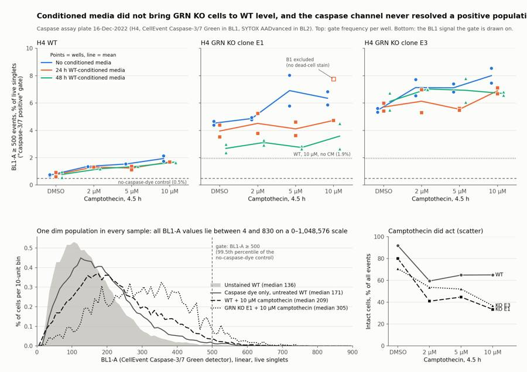
79
tool call · Bash
cd /task; python3 - <<'EOF'
s=open('work/fig.py').read()
s=s.replace("'Conditioned media did not bring GRN KO cells to WT level, and the caspase channel never resolved a positive population'","'Conditioned media did not bring GRN KO cells to WT level;\\nthe caspase channel never resolved a positive population'")
s=s.replace("fontweight='bold',y=0.965)","fontweight='bold',y=0.985)")
s=s.replace("top=0.87,bottom=0.07","top=0.85,bottom=0.07")
s=s.replace("fig.text(0.07,0.918,","fig.text(0.07,0.895,")
s=s.replace("bins=np.linspace(0,900,91)","bins=np.linspace(0,900,46)")
s=s.replace("density=True)[0]*100,","density=True)[0]*2000,")
s=s.replace("'% of cells per 10-unit bin'","'% of cells per 20-unit bin'")
s=s.replace("ax2.text(3.08,m[-1],","ax2.text(3.1,m[-1]+{'WT':0,'E1':-3.5,'E3':3.5}[line],")
s=s.replace("figsize=(13,9.2)","figsize=(13,9.6)")
open('work/fig.py','w').write(s)
EOF
python3 work/fig.py80
tool call · Read
{
"file_path": "/task/outputs/figure.png"
}81
tool output
(Bash completed with no output)
82
tool output
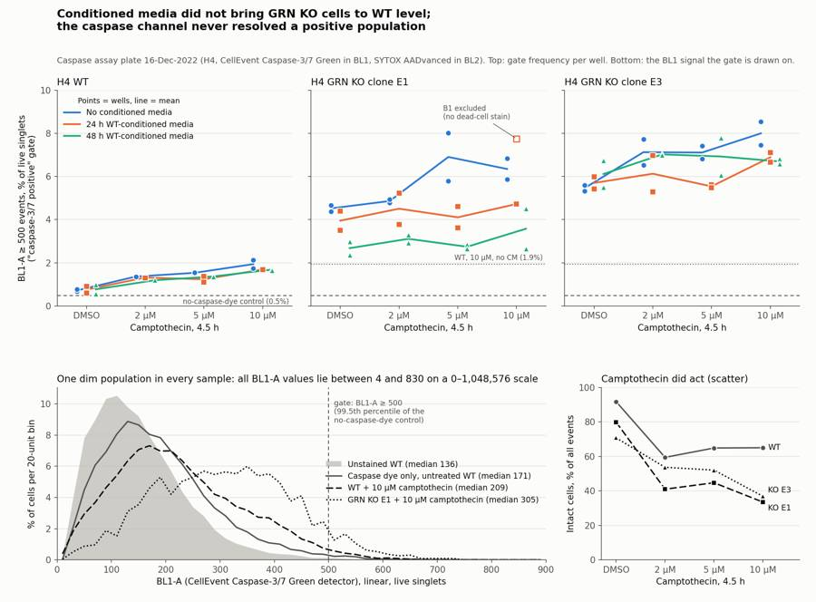
84
tool call · Bash
cd /task; python3 - <<'EOF'
import pickle, numpy as np, pandas as pd
from matplotlib.path import Path
D=pickle.load(open('/task/work/D.pkl','rb'))
lay=pd.read_csv('/task/inputs/plate_layout.csv').set_index('well')
cellpoly=Path([(160e3,70e3),(160e3,330e3),(380e3,720e3),(730e3,1.0e6),(730e3,150e3),(400e3,70e3)])
print('BL1-W nonzero total', sum((d['BL1-W']!=0).sum() for d in D.values()), 'total events', sum(len(d) for d in D.values()))
print('BL1-A min/max', min(d['BL1-A'].min() for d in D.values()), max(d['BL1-A'].max() for d in D.values()))
print('BL1-H max', max(d['BL1-H'].max() for d in D.values()))
neg={}
for w,d in D.items():
c=cellpoly.contains_points(d[['FSC-A','SSC-A']].values)
neg[w]=100*(d.loc[c,'BL2-A']<-100).mean()
neg=pd.Series(neg)
e1=[w for w in lay.index if lay.loc[w,'cell_line']=='E1' and w[0] in 'BE']
print(neg[e1].round(2).sort_values().to_string())
print(neg[['G1','G2','G3','G4','G5','G6']].round(2))
print('all stained min excluding B1', neg.drop(['B1','G1','G3']).min())
# FSC-A ceiling and SSC sat
print('max frac FSC-A>=700k', max((d['FSC-A']>=700e3).mean() for d in D.values())*100, 'max frac SSC sat', max((d['SSC-A']>=1048575).mean() for d in D.values())*100)
w=pd.read_csv('/task/work/wells2.csv').set_index('well')
print(w.loc[e1,'fsc_med'].round(0).sort_values().to_string())
EOF85
tool output
BL1-W nonzero total 2 total events 1150506 BL1-A min/max 4.0 830.0 BL1-H max 1292.0 B1 0.00 E10 0.86 B3 2.06 E5 4.21 B9 4.52 E8 4.53 E11 4.60 B10 4.68 E7 4.76 B4 4.79 E6 4.94 B11 5.06 E4 5.37 E3 5.37 B5 5.39 E12 5.40 E1 5.42 B2 5.42 E9 5.60 B7 5.83 B6 6.04 B12 6.12 E2 6.52 B8 7.45 G1 0.05 G2 17.52 G3 0.12 G4 9.61 G5 5.36 G6 11.01 dtype: float64 all stained min excluding B1 0.8576329331046313 max frac FSC-A>=700k 0.21911138161898966 max frac SSC sat 0.07283321194464676 well B5 329.0 E6 330.0 B6 333.0 E5 336.0 E7 339.0 B7 340.0 E2 344.0 E9 346.0 B9 347.0 E1 348.0 B2 349.0 E3 353.0 B10 363.0 B8 363.0 B11 366.0 E11 367.0 E8 368.0 B3 372.0 B1 374.0 B12 380.0 E4 384.0 E12 389.0 B4 401.0 E10 458.0
87
tool call · Bash
cd /task; python3 - <<'EOF'
import pickle
D=pickle.load(open('/task/work/D.pkl','rb'))
print({w:int((d['BL1-W']!=0).sum()) for w,d in D.items() if (d['BL1-W']!=0).sum()>0}, (D['G3']['BL1-W']!=0).sum())
s=open('work/final.py').read()
s=s.replace("(2.0-7.4% in the other 23 SYTOX-stained E1 wells; 0.1% in the no-SYTOX controls G1/G3)","(0.9-7.5% in the other 23 E1 wells of rows B and E; 0.05-0.12% in the no-SYTOX controls G1/G3)")
s=s.replace("FSC-A median of live singlets = 458k vs 330-389k in the other E1-line wells","FSC-A median of live singlets = 458k vs 329-401k in the other 23 E1 wells of rows B and E")
open('work/final.py','w').write(s)
EOF
python3 work/final.py > /dev/null; grep -c . outputs/flags.csv; grep -v ",none," outputs/flags.csv | cut -c1-40088
tool output
{'D1': 2} 0
79
file,well,issue_type,evidence,decision
Caspase-assay-2-mlk(1)_caspase_Group_B1.fcs,B1,other,SYTOX AADvanced (BL2) dead-cell stain appears to be missing so the live gate is not valid: BL2-A 99th percentile of all events = 1897 (unstained G1 = 1782; caspase-only G3 = 1735; the other five E1 10uM wells = 6546-16369); 0.0% of scatter-gated cells have BL2-A < -100 (0.9-7.5% in the other 23 E1 wells of rows B and E; 0.05-0.12% in the no-SYTO
Caspase-assay-2-mlk(1)_caspase_Group_E10.fcs,E10,other,"Acquisition start disturbed and forward scatter shifted: first event at 0.54 s (15 events in the first second vs ~300-450/s afterwards); FSC-A median of live singlets = 458k vs 329-401k in the other 23 E1 wells of rows B and E (FSC-H and FSC-W both raised, SSC unchanged). Because background BL1-A scales with event size, % caspase_pos is infla
Caspase-assay-2-mlk(1)_caspase_Group_G3.fcs,G3,bad_control,"Caspase-only control was made from untreated WT cells and contains no caspase-positive population, so it cannot serve as a positive single-stain/gate-setting control: 0.98% of live singlets above the BL1-A>=500 gate vs 0.48% in the L/D-only FMO (G2) and 0.46% unstained (G1); median BL1-A 171 vs 144 (G2) and 136 (G1); maximum BL1-A 769 on90
tool call · Bash
cd /task; python3 - <<'EOF'
import pickle, numpy as np, pandas as pd
from matplotlib.path import Path
D=pickle.load(open('/task/work/D.pkl','rb'))
cellpoly=Path([(160e3,70e3),(160e3,330e3),(380e3,720e3),(730e3,1.0e6),(730e3,150e3),(400e3,70e3)])
sing=Path([(100e3,37e3),(100e3,82e3),(730e3,535.6e3),(730e3,270.1e3)])
d=D['G2']; m=cellpoly.contains_points(d[['FSC-A','SSC-A']].values)&sing.contains_points(d[['FSC-A','FSC-H']].values)
x=d[m]; print('G2 dead BL1 med',x.loc[x['BL2-A']>=15000,'BL1-A'].median(),'n',(x['BL2-A']>=15000).sum(),'live BL1 med',x.loc[x['BL2-A']<15000,'BL1-A'].median(), 'dead FSC med',x.loc[x['BL2-A']>=15000,'FSC-A'].median(),'live FSC',x.loc[x['BL2-A']<15000,'FSC-A'].median())
w=pd.read_csv('/task/work/wells2.csv').set_index('well')
a=w[~w.index.str.startswith('G')]
print('max pct_dead',a.pct_dead.max(),a.pct_dead.idxmax(),'min live',a.live.min(),a.live.idxmin(), 'min caspase_pos count', a.caspase_pos.min())
print(a.groupby(['cell_line','camptothecin','conditioned_media']).live.mean().unstack().round(0))
print('pct_sing range',w.pct_sing.min(),w.pct_sing.max())
EOF91
tool output
G2 dead BL1 med 148.0 n 1379 live BL1 med 144.0 dead FSC med 209499.0 live FSC 301285.0
max pct_dead 1.9384264538198404 A5 min live 1030 F9 min caspase_pos count 35
conditioned_media 24hr conditioned media ... No conditioned media
cell_line camptothecin ...
E1 10uM 3114.0 ... 1142.0
2uM 5231.0 ... 4537.0
5uM 4518.0 ... 2984.0
DMSO 8956.0 ... 8150.0
E3 10uM 2724.0 ... 1306.0
2uM 4962.0 ... 5395.0
5uM 5367.0 ... 4102.0
DMSO 6700.0 ... 9102.0
WT 10uM 16083.0 ... 7808.0
2uM 17690.0 ... 21256.0
5uM 17720.0 ... 14240.0
DMSO 26359.0 ... 24832.0
[12 rows x 3 columns]
pct_sing range 93.35252000561562 99.2223238792314892
tool call · Bash
cd /task; cat > outputs/report.md <<'EOF' # Conditioned-media caspase plate, H4 WT vs GRN KO (acquired 16-Dec-2022) ## Question Can conditioned media (CM) collected from WT H4 cells for 24 h or 48 h bring caspase-3/7 activity in H4 GRN KO cells (clones E1 and E3) back to the WT level, with and without a camptothecin challenge (2, 5, 10 µM for 4.5 h)? ## Methods **Channels.** The labels stored in the files are from an older template. Following the plan's reagent list and cytometer settings, BL1 (labelled "AAV-GFP-GFP") is CellEvent Caspase-3/7 Green and BL2 (labelled "AAdvanced livedead") is SYTOX AADvanced. **Gating.** One FlowKit strategy for all 78 files (`gates.xml`), linear axes, no compensation (the file matrix is identity; the L/D-only well shows no SYTOX signal in BL1: median BL1-A 148 in SYTOX-bright cells vs 144 in SYTOX-negative cells). | population | parent | gate | |---|---|---| | `cells` | all events | polygon on FSC-A / SSC-A around the intact-cell cluster; excludes low-scatter debris and SSC-saturated events | | `singlets` | `cells` | polygon on FSC-A / FSC-H, FSC-H/FSC-A from 0.37 to about 0.73 | | `live` | `singlets` | BL2-A < 15,000 (valley between the main population and the SYTOX-bright population of the L/D-only control G2) | | `dead` | `singlets` | BL2-A ≥ 15,000 | | `caspase_pos` | `live` | BL1-A ≥ 500 (99.5th percentile of the L/D-only control G2, which has no caspase dye, is 495) | **Metric.** % `caspase_pos` of `live`, per well, then mean and SD across the replicate wells of a condition (cell line × camptothecin dose × media; n = 2). No normalisation. **Layout used.** Columns 1–4 = 24 h CM, 5–8 = 48 h CM, 9–12 = no CM (from the plate-map colours); rows A/D = WT, B/E = E1, C/F = E3; row G = controls. **Quality control.** Per-well event rate over time, first/last-third scatter and BL1 drift, detector saturation, stain presence (BL2 pattern against the unstained and single-stain controls) and agreement between replicates. ## Results **1. The caspase channel did not resolve a positive population in any well.** - Across all 1,150,506 events, BL1-A lies between 4 and 830 on a 0–1,048,576 scale, and BL1-W is 0 for all but 2 events. - Every well shows one dim population; there is no second peak, including at 10 µM camptothecin. - Stain window: the caspase-only control (G3) has median BL1-A 171 and 0.98% in the gate; the unstained control (G1) has 136 and 0.46%; the L/D-only control (G2) has 144 and 0.48%. - Positive-control window: WT with 10 µM camptothecin gives 1.94% (SD 0.27) against 0.72% (SD 0.06) for WT with DMSO, a difference of 1.2 percentage points. Median BL1-A moves from 168 to 208. - The BL1-A background rises with event size (correlation with FSC-A 0.35–0.46 in the controls, including the unstained one), so the gate frequency is partly a readout of cell size. **2. Camptothecin did act on the cells, seen in scatter and cell number.** | no CM | intact cells, % of events, DMSO | intact cells, % of events, 10 µM | live singlets per well, DMSO | live singlets per well, 10 µM | |---|---|---|---|---| | WT | 91.5 | 64.0 | 24,832 | 7,809 | | E1 | 82.9 | 31.5 | 8,151 | 1,142 | | E3 | 74.7 | 34.8 | 9,103 | 1,306 | SYTOX-bright cells stayed at or below 1.9% of singlets in every assay well. **3. KO wells read higher than WT wells in the gate, in every media condition.** % `caspase_pos` of `live`, mean of 2 wells (SD): | line | dose | no CM | 24 h CM | 48 h CM | |---|---|---|---|---| | WT | DMSO | 0.72 (0.06) | 0.75 (0.21) | 0.77 (0.30) | | WT | 10 µM | 1.94 (0.27) | 1.69 (0.02) | 1.69 (0.05) | | E1 | DMSO | 4.52 (0.20) | 3.95 (0.63) | 2.68 (0.44) | | E1 | 10 µM | 6.35 (0.68) | 4.73 (n = 1) | 3.58 (1.31) | | E3 | DMSO | 5.47 (0.20) | 5.70 (0.40) | 6.12 (0.88) | | E3 | 10 µM | 8.00 (0.76) | 6.89 (0.31) | 6.70 (0.16) | The 2 µM and 5 µM rows are in `condition_summary.csv`. **4. Effect of conditioned media.** - **E1, 48 h CM:** lower than no CM in 8 of 8 dose- and row-matched well pairs, mean difference −2.6 percentage points (ratio 0.55). At 10 µM it is 3.58% against 6.35%, still 1.8 times the WT value of 1.94%. - **E1, 24 h CM:** lower in 6 of 7 pairs, mean −1.2 points. - **E3:** no consistent effect of 48 h CM (lower in 4 of 8 pairs, mean −0.2 points); 24 h CM lower in 7 of 8 pairs, mean −0.9 points. At 10 µM both remain 3.5 times WT. - **WT:** both CM lower in 7 of 8 pairs, mean −0.14 points. - The E1 difference corresponds to a shift of about 5% in median BL1-A at matched cell size (FSC-A 300–450k: 263 with 48 h CM against 293 without, at 10 µM). E1 cells in 48 h CM were also smaller (median FSC-A 332–365k against 347–411k without CM), which lowers BL1-A background on its own. **5. Wells flagged** (details in `flags.csv`). - **B1 (E1, 10 µM, 24 h CM): excluded.** The dead-cell stain appears to be missing: BL2-A 99th percentile 1,897, like the unstained control (1,782), against 6,546–16,369 in the other five E1 10 µM wells; 1 of 3,753 singlets in the dead gate. - **E10 (E1, 5 µM, no CM): kept with a note.** First event at 0.54 s and FSC-A median 458k against 329–401k in the other E1 wells; its gate frequency (8.03%) is inflated relative to its replicate B10 (5.79%). - **G3 (caspase-only control): kept with a note.** It was made from untreated cells and contains no positive population, so it could not be used to set the gate or compensation. - No clogs, dry wells or saturation problems: all wells ran 15.8–16.8 s, first-to-last-third drift in FSC-A was within 4%, at most 0.22% of events reach the FSC-A ceiling and at most 0.07% saturate SSC-A. ## Conclusion No. On this plate conditioned media did not restore GRN KO cells to the WT level: with either CM, both KO clones stay 1.8 to 3.5 times above WT at 10 µM camptothecin. One clone (E1) reads consistently lower with 48 h CM, but the second clone (E3) does not, so there is no reproducible rescue. The plate cannot settle the question in either direction, because the readout is not a validated caspa … [9,792 more characters not shown]
93
tool output
{
"question": "Can 24 h or 48 h conditioned media from WT H4 cells restore wild-type levels of caspase-3/7 activity in H4 GRN KO cells (clones E1, E3), with and without camptothecin challenge?",
"comparisons": [
{
"comparison": "Positive-control window: WT + 10 uM camptothecin vs WT + DMSO (no CM)",
"a": "WT_10uM_noCM",
"b": "WT_DMSO_noCM",
"direction": "increase",
"magnitude": "1.94% vs 0.72% caspase_pos of live (+1.2 percentage points, 2.7-fold); median BL1-A 208 vs 168; no separate positive population",
"confidence": "medium"
},
{
"comparison": "Stain window: caspase-only control vs L/D-only (no caspase dye) control",
"a": "ctrl_WT_caspase_only",
"b": "ctrl_WT_LD_only_FMO",
"direction": "no_clear_change",
"magnitude": "0.98% vs 0.48% (+0.5 percentage points, n=1 each); median BL1-A 171 vs 144",
"confidence": "medium"
},
{
"comparison": "KO phenotype, clone E1 vs WT (10 uM, no CM)",
"a": "E1_10uM_noCM",
"b": "WT_10uM_noCM",
"direction": "increase",
"magnitude": "6.35% vs 1.94% (3.3-fold, +4.4 percentage points)",
"confidence": "medium"
},
{
"comparison": "KO phenotype, clone E3 vs WT (10 uM, no CM)",
"a": "E3_10uM_noCM",
"b": "WT_10uM_noCM",
"direction": "increase",
"magnitude": "8.00% vs 1.94% (4.1-fold, +6.1 percentage points)",
"confidence": "medium"
},
{
"comparison": "E1 + 48 h CM vs E1 no CM (10 uM)",
"a": "E1_10uM_CM48h",
"b": "E1_10uM_noCM",
"direction": "decrease95
agent
Deliverables are all written; now correcting a few cited ranges and running a final consistency check across the files.
96
tool call · Bash
cd /task; python3 - <<'EOF'
import json
r=open('outputs/report.md').read()
rep=[
("both KO clones stay 1.8 to 3.5 times above WT at 10 µM camptothecin","both KO clones stay 1.8 to 3.6 times above WT at 10 µM camptothecin"),
("At 10 µM both remain 3.5 times WT.","At 10 µM both remain about 3.5 times WT."),
("The E1 difference corresponds to a shift of about 5% in median BL1-A at matched cell size (FSC-A 300–450k: 263 with 48 h CM against 293 without, at 10 µM). E1 cells in 48 h CM were also smaller (median FSC-A 332–365k against 347–411k without CM)",
"The E1 difference corresponds to a shift of 4–10% in median BL1-A at matched cell size (FSC-A 300–450k: 263 with 48 h CM against 293 without, at 10 µM). E1 cells in 48 h CM were also smaller (median FSC-A 329–368k against 346–389k without CM, leaving out E10)"),
("KO cells are larger (median FSC-A 345–410k against 285–305k for WT) and are also brighter in BL2 (median about 1,000–1,400 against 400–700)","KO cells are larger (median FSC-A 329–410k against 283–306k for WT) and are also brighter in BL2 (median about 950–2,100 against 370–760)"),
("The 10 µM KO wells have 1,030–1,998 live singlets, so each percentage carries roughly ±0.5–0.9 points of counting error.","The 10 µM KO wells have 1,030–3,275 live singlets, so each percentage carries roughly ±0.4–0.9 points of counting error."),
]
for a,b in rep:
assert a in r, a[:50]; r=r.replace(a,b)
open('outputs/report.md','w').write(r)
a=json.load(open('outputs/answer.json'))
s=json.dumps(a,ensure_ascii=False)
for x,y in [("both KO clones stay 1.8- to 3.5-fold above WT","both KO clones stay 1.8- to 3.6-fold above WT"),
("KO cells are larger (FSC-A 345-410k vs 285-305k)","KO cells are larger (FSC-A 329-410k vs 283-306k)"),
("(median FSC-A 332-365k vs 347-411k)","(median FSC-A 329-368k vs 346-389k)")]:
assert x in s, x; s=s.replace(x,y)
json.dump(json.loads(s),open('outputs/answer.json','w'),indent=1,ensure_ascii=False)
EOF
cat > work/validate.py <<'EOF'
import flowkit as fk, pandas as pd, numpy as np, json, re
lay=pd.read_csv('/task/inputs/plate_layout.csv')
gs=fk.parse_gating_xml('/task/outputs/gates.xml')
gates={g for g,_ in gs.get_gate_ids()}
c=pd.read_csv('/task/outputs/counts.csv')
assert list(c.columns)==['file','well','population','role','parent','count','pct_of_parent']
assert set(c.population)-{'all_events'}==gates, (set(c.population),gates)
assert c.groupby('file').population.nunique().eq(6).all() and c.file.nunique()==78 and set(c.file)==set(lay.file)
for role in ['cells','singlets','live','marker_positive']:
assert c[c.role==role].population.nunique()==1 and (c.role==role).sum()==78
bad=0
for _,r in lay.iterrows():
s=fk.Sample('/task/inputs/raw/'+r.file)
rep=gs.gate_sample(s).report.set_index('gate_name')
sub=c[c.file==r.file].set_index('population')
assert sub.loc['all_events','count']==s.event_count and sub.loc['all_events','parent']=='none' and pd.isna(sub.loc['all_events','pct_of_parent'])
for g in gates:
if int(rep.loc[g,'count'])!=int(sub.loc[g,'count']): bad+=1
p=sub.loc[sub.loc[g,'parent'],'count']
assert abs(sub.loc[g,'pct_of_parent']-100*sub.loc[g,'count']/p)<1e-6
assert abs(rep.loc[g,'relative_percent']-sub.loc[g,'pct_of_parent'])<1e-6
assert sub.loc[g,'well']==r.well
print('count mismatches',bad)
f=pd.read_csv('/task/outputs/flags.csv',keep_default_na=False)
assert list(f.columns)==['file','well','issue_type','evidence','decision'] and len(f)==78 and set(f.file)==set(lay.file)
assert set(f.issue_type)<={'none','clog','ran_dry','too_few_events','saturation','bad_control','mislabel','other'} and set(f.decision)<={'keep','keep_with_note','exclude'}
assert all(re.search(r'\d',e) for e in f[f.issue_type!='none'].evidence)
exc=set(f[f.decision=='exclude'].well)
cs=pd.read_csv('/task/outputs/condition_summary.csv',keep_default_na=False)
assert list(cs.columns)==['condition','wells','n_wells_used','mean','sd','metric_definition','normalisation_applied']
assert cs.condition.is_unique and not cs.condition.str.contains(',').any()
piv=c.pivot(index='well',columns='population',values='count'); pct=100*piv.caspase_pos/piv.live
allw=[]
for _,r in cs.iterrows():
ws=r.wells.split(';'); allw+=ws
assert len(ws)==int(r.n_wells_used) and not (set(ws)&exc)
assert abs(pct[ws].mean()-float(r['mean']))<1e-3
if len(ws)>1: assert abs(pct[ws].std(ddof=1)-float(r.sd))<1e-3
else: assert r.sd==''
assert len(allw)==len(set(allw))==77
a=json.load(open('/task/outputs/answer.json'))
assert set(a['excluded_wells'])==exc
for k in a['comparisons']:
assert k['a'] in set(cs.condition) and k['b'] in set(cs.condition) and k['direction'] in ['increase','decrease','no_clear_change'] and re.search(r'\d',k['magnitude'])
ma,mb=float(cs.set_index('condition').loc[k['a'],'mean']),float(cs.set_index('condition').loc[k['b'],'mean'])
print(k['direction'].ljust(16),round(ma,2),round(mb,2),k['comparison'])
assert a['overall_answer'].split(':')[0] in ['yes','partial','no']
print(a['assay_verdict'],a['next_action'],a['next_change'].keys(),a['excluded_wells'])
heads=[l for l in open('/task/outputs/report.md') if l.startswith('## ')]; print(heads)
import os; print(sorted(os.listdir('/task/outputs')))
EOF
python3 work/validate.py97
tool output
count mismatches 0 increase 1.94 0.72 Positive-control window: WT + 10 uM camptothecin vs WT + DMSO (no CM) no_clear_change 0.98 0.48 Stain window: caspase-only control vs L/D-only (no caspase dye) control increase 6.35 1.94 KO phenotype, clone E1 vs WT (10 uM, no CM) increase 8.0 1.94 KO phenotype, clone E3 vs WT (10 uM, no CM) decrease 3.58 6.35 E1 + 48 h CM vs E1 no CM (10 uM) no_clear_change 4.73 6.35 E1 + 24 h CM vs E1 no CM (10 uM) no_clear_change 6.7 8.0 E3 + 48 h CM vs E3 no CM (10 uM) no_clear_change 6.89 8.0 E3 + 24 h CM vs E3 no CM (10 uM) decrease 2.68 4.52 E1 + 48 h CM vs E1 no CM (DMSO, unchallenged) no_clear_change 6.12 5.47 E3 + 48 h CM vs E3 no CM (DMSO, unchallenged) increase 3.58 1.94 Rescue to WT level? E1 + 48 h CM vs WT no CM (10 uM) increase 6.7 1.94 Rescue to WT level? E3 + 48 h CM vs WT no CM (10 uM) increase 6.89 1.94 Rescue to WT level? E3 + 24 h CM vs WT no CM (10 uM) needs_optimisation optimise_reagent_or_setting dict_keys(['what', 'from', 'to', 'why']) ['B1'] ['## Question\n', '## Methods\n', '## Results\n', '## Conclusion\n', '## Caveats\n', '## Recommendation\n'] ['answer.json', 'condition_summary.csv', 'counts.csv', 'figure.png', 'flags.csv', 'gates.xml', 'report.md']
99
agent
The plate is analysed and all seven deliverables are in `/task/outputs/`. The answer to the plan's question is **no**: conditioned media did not bring the GRN KO cells to the WT level. It is not a trustworthy negative, though, because the caspase channel never showed a positive population.
- **Caspase readout:** every BL1 value on the plate lies between 4 and 830 on a 0–1,048,576 scale, as one dim population in every well. The camptothecin positive control moved the gate from 0.72% to 1.94% of live cells. The caspase-only control (0.98%) is barely above the no-dye control (0.48%).
- **Camptothecin did act:** intact cells fell from 91% to 64% of events in WT and from about 75–83% to 32–35% in the KO clones, so the missing caspase signal is not simply a failed treatment.
- **KO vs WT:** KO wells read higher than WT in the gate under every media condition; at 10 µM without conditioned media, E1 is 6.35% and E3 8.00% against 1.94% for WT. There is no unstained KO control, so this could be autofluorescence or cell size rather than caspase.
- **Conditioned media:** E1 with 48 h media reads lower (3.58% vs 6.35% at 10 µM, lower in 8 of 8 matched well pairs) but is still 1.8 times WT. E3 does not reproduce it (6.70% vs 8.00%), and the E1 cells in 48 h media were also smaller, which lowers the background on its own.
**Flags**
- **B1 excluded:** the dead-cell stain appears to be missing, so that condition has one well.
- **E10 kept with a note:** late start and a forward-scatter shift.
- **G3 kept with a note:** the caspase-only control was made from untreated cells and has no positive population.
- No clogs, dry wells or saturation problems.
**Recommendation:** verdict `needs_optimisation`, next action `optimise_reagent_or_setting`. The single change is to set the BL1 voltage by titration (about 300–450, instead of the fixed 225) on a camptothecin-treated caspase-only control. The report also lists, in order, collecting the floating cells at harvest, adding unstained and single-stain controls for each line, and extending the exposure time if no positive peak appears.
Two things to be aware of:
- The "caspase positive" gate (BL1-A ≥ 500) is the 99.5th percentile of the no-dye control, so the metric is the tail of a single population and overstates small shifts.
- The 10 µM wells in the 24 h media block (column 1) kept about twice as many live cells as the other 10 µM columns in all three lines; the plate cannot say whether that is the media or a dosing or position effect.
Files are in `/task/outputs/`:
- gates.xml
- counts.csv
- flags.csv
- condition_summary.csv
- figure.png
- report.md
- answer.json
final result
The plate is analysed and all seven deliverables are in `/task/outputs/`. The answer to the plan's question is **no**: conditioned media did not bring the GRN KO cells to the WT level. It is not a trustworthy negative, though, because the caspase channel never showed a positive population. - **Caspase readout:** every BL1 value on the plate lies between 4 and 830 on a 0–1,048,576 scale, as one dim population in every well. The camptothecin positive control moved the gate from 0.72% to 1.94% of live cells. The caspase-only control (0.98%) is barely above the no-dye control (0.48%). - **Camptothecin did act:** intact cells fell from 91% to 64% of events in WT and from about 75–83% to 32–35% in the KO clones, so the missing caspase signal is not simply a failed treatment. - **KO vs WT:** KO wells read higher than WT in the gate under every media condition; at 10 µM without conditioned media, E1 is 6.35% and E3 8.00% against 1.94% for WT. There is no unstained KO control, so this could be autofluorescence or cell size rather than caspase. - **Conditioned media:** E1 with 48 h media reads lower (3.58% vs 6.35% at 10 µM, lower in 8 of 8 matched well pairs) but is still 1.8 times WT. E3 does not reproduce it (6.70% vs 8.00%), and the E1 cells in 48 h media were also smaller, which lowers the background on its own. **Flags** - **B1 excluded:** the dead-cell stain appears to be missing, so that condition has one well. - **E10 kept with a note:** late start and a forward-scatter shift. - **G3 kept with a note:** the caspase-only control was made from untreated cells and has no positive population. - No clogs, dry wells or saturation problems. **Recommendation:** verdict `needs_optimisation`, next action `optimise_reagent_or_setting`. The single change is to set the BL1 voltage by titration (about 300–450, instead of the fixed 225) on a camptothecin-treated caspase-only control. The report also lists, in order, collecting the floating cells at harvest, adding unstained and single-stain controls for each line, and extending the exposure time if no positive peak appears. Two things to be aware of: - The "caspase positive" gate (BL1-A ≥ 500) is the 99.5th percentile of the no-dye control, so the metric is the tail of a single population and overstates small shifts. - The 10 µM wells in the 24 h media block (column 1) kept about twice as many live cells as the other 10 µM columns in all three lines; the plate cannot say whether that is the media or a dosing or position effect. Files are in `/task/outputs/`: - gates.xml - counts.csv - flags.csv - condition_summary.csv - figure.png - report.md - answer.json